← 回股市觀察
盤中觀察 每日盤中觀察
2026/09/30 12:30 即時快照 · 當日盤中成交金額前 50 檔（上市 35＋上櫃 15）· 公開資料整理
48,256.81
加權指數 +624.85 點（+1.31%）
這是盤中快照，不是收盤結果。資料時間 2026-09-30 12:30:57（TWSE MIS 即時行情，上市／上櫃皆 delay=0）。
13:30 收盤（含最後一盤集合競價）會再變動；量能是以「已過交易時間比例」推估（尾盤大量時會低估）；
技術面標籤是把盤中現價代入原本以收盤價設計的規則（日線歷史只到前一交易日 9/14）。
統計範圍：候選池＝20260929 與 20260924 收盤成交值前段（上市 250／上櫃 130）取聯集，共 427 檔；再以今日盤中累計成交金額排序取
上市前 35＋上櫃前 15。漲跌家數是候選池內的數字，不是全市場（即時全市場家數證交所沒有開放端點）。
本頁為公開資料的整理與觀察，不構成投資建議，不報牌、不預測、不下買賣決策。
時程紀錄（本日盤中分析）▾ 點擊展開▴ 點擊收合
| 階段 | 時間 |
|---|
| 任務開始 | 由排程自動觸發（週一～週五 12:30） |
| 分析腳本執行 | 12:30:21 → 12:30:57（35.7 秒） |
| 資料快照時間 | 2026-09-30 12:30:57（行情時間戳 12:30:35） |
| 本頁產出 | 見頁尾版本時間 |
逐階段 log：
| 12:30:21 | START 盤中分析開始 |
| 12:30:21 | ① 抓即時指數（tse_t00 / otc_o00） |
| 12:30:21 | ② 建立候選池（20260929 與 20260924 成交值前段，上市＋上櫃） |
| 12:30:21 | 候選池共 427 檔 |
| 12:30:21 | ③ 抓即時候選池行情 |
| 12:30:56 | 取得即時報價 427 檔 |
| 12:30:56 | 候選池漲跌：漲 296／跌 114／平盤 17（快照時間 12:30:35） |
| 12:30:56 | ④ 選出 70 檔（上市 50＋上櫃 20），門檻 23.36 億 |
| 12:30:56 | ⑤ 抓日線歷史並算技術面 |
| 12:30:57 | ⑥ 產出（70 檔） |
K 線圖怎麼看：每一檔都附 K 線圖 —— 黃圈是轉折低點、粉圈是轉折高點（
虛線圈代表還沒確認的轉折）、藍線是月線（20 日均線）；頸線取最近兩個轉折低點之間的最高轉折高點，
突破頸線才會標示。
圖上另有兩條水平虛線、左側標數值：高點頸線（紅，最近兩個轉折低點之間的最高轉折高點）與低點頸線（綠，最近兩個轉折高點之間的最低轉折低點）；樣本不足就不畫。
紅色 K 棒＝收盤高於開盤、綠色＝收盤低於開盤。
大盤趨勢快篩（加權指數）（盤中近似） 資料日 2026/09/29・來源：證交所公開資料
主狀態：站上月線、月線向上
前一交易日對照（09/24）：多頭排列（量比 20 0.85） → 今日站上月線、月線向上（量比 20 0.93）
指標、數值、判定（點開看 12 項明細：均線位置／排列、月線方向、頸線、轉折結構、位階、量價…）
加權指數今天跌 392.64 點（-0.82%），收 47,631.96、站上月線 46,820.80；月線還在上彎，MA5 這條短均還沒收復，已站上高點頸線 47,385.28。
- 均線位置：4 條均線站上 3 條；沒站上的是 MA5 47,866.57（收盤比它低 0.49%）
- 月線方向：月線 MA20 現在 46,820.80，比 5 個交易日前高 563.09 點 → 上彎
- 量能：集中市場成交 8,361.4 億，比 5 日均量少一些（0.94 倍）、比 20 日均量少一些（0.93 倍）
- 關鍵價位：高點頸線 47,385.28已突破；低點頸線 44,592.92，還在下方 6.82%
- 大小型股：加權 -0.82%、櫃買 -0.18%，兩邊同向
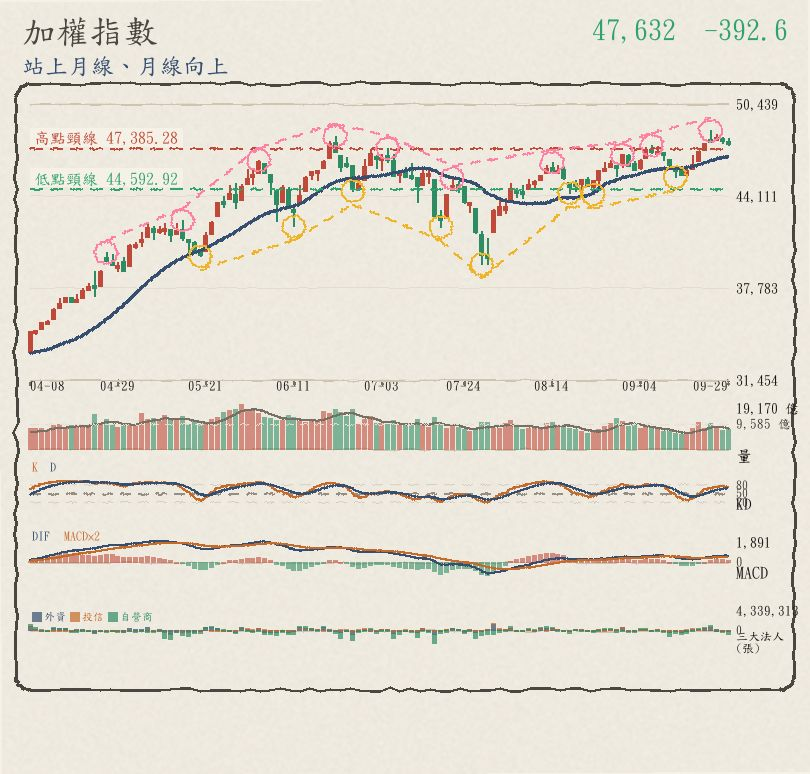
圖說：加權指數日 K（與個股圖相同標記）：黃圈＝轉折低點、粉圈＝轉折高點、虛線小圈＝還沒確認的轉折、藍線＝月線 MA20、水平虛線＝高點／低點頸線。最後一根是資料日當天。
本區塊為公開資料的技術面觀察，不構成投資建議，
不報牌、不預測、不下買賣決策。成交金額為集中市場總成交金額（含 ETF／權證），
與頁首摘要的「上市個股成交金額」口徑不同。標籤是統計，不是評分、也不是推薦。
上市 vs 上櫃（同期快篩）
加權 -0.82% vs 櫃買 -0.18%（同向） → 同向
（兩個市場分開寫，不合併成一個數字；櫃買為 TPEX 公開資料）
櫃買歷史：TPEX 逐日回補 130 根；來源：櫃買中心 www/zh-tw/indexInfo/sectinx（逐日，官方；OpenAPI tpex_index 只回當月）
（TPEX OpenAPI 只回當月，故逐日回補；歷史不足就不算該條均線並標「資料不足」，不用錯數字）
近 20 個交易日大盤狀態回溯（最新在上）（點開看逐日主狀態／量比／量價象限）
用同一支程式回算最近 20 個交易日（主狀態 S1~S8 與量比 20 皆為當日收盤當時的判定，
不是事後調整）；量比 20 未公布的日子寫「—」。
好條件最多的（前 10）
不好條件最多的（前 10）
好條件（8 項）：站上月線、月線向上、底底高、頭頭高、突破頸線、相對大盤強、攻擊量（量增＋上漲）、守住今日高檔（距今日高點 1% 內）。
不好條件（8 項）：跌破前低、今日下跌、相對大盤弱、在月線之下、量增下跌（出貨）、貼近今日低點（1% 內）、跌破昨日低點、月線下彎。
兩邊都是同一組日線資料＋盤中即時價算出來的「符合項目數」，只是把方向相反的條件分開數；
條件數不是評分或推薦，不構成投資建議。
盤中爆量（估量比 ≥ 1.5）（29 上市 19／上櫃 10）
今日疲弱（跌幅前 10）（10 上市 5／上櫃 5）
逐檔（70 檔，依盤中成交金額排序）
台積電 2330 上市
2500 +25.0（+1.01%）
區間或轉弱 盤中成交值 320.55 億・全榜第 1 名（上市第 1 名）・相對大盤 -0.30
好條件 4/8：站上月線、月線向上、突破頸線、守住今日高檔（距今日高點 1% 內）
不好條件 2/8：相對大盤弱、貼近今日低點（1% 內）
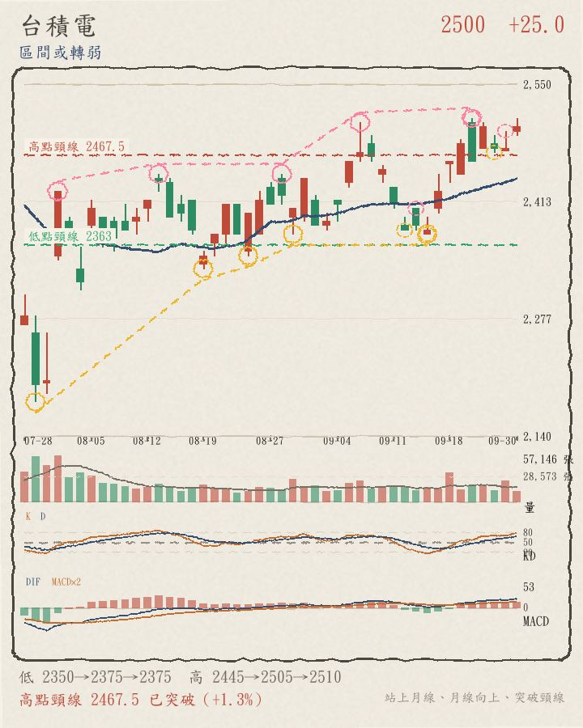
12:30 盤中 2500（+1.01%），比加權指數弱 0.30 個百分點、站上月線 2435.25，已突破高點頸線 2467.5，轉折還沒走出明顯方向。
- 月線位置：現價 2500 在月線 2435.25 之上（+2.7%）；5 日線 2478 也在月線之上（短均在上）；月線向上
- 量能：以已過交易時間推估，今天成交量約是 20 日均量的 0.88 倍（量平），比 20 日均量少一些
- 關鍵價位：高點頸線 2467.5 已站上；前一交易日高點 2495（高於 0.2%）；今天盤中高點 2510（低於 0.4%）；今天盤中低點 2490（高於 0.4%）
- 轉折結構：低點 2350、2375、2375 與高點 2445、2505、2510 都沒有明顯遞增，屬於區間震盪或轉弱；還沒確認的轉折低點 09-16 2375、09-24 2470；還沒確認的轉折高點 09-22 2510、09-29 2495（圖上虛線小圈）
南亞 1303 上市
259.5 +12.5（+5.06%）
底部墊高、未過前高 盤中成交值 267.72 億・全榜第 2 名（上市第 2 名）・相對大盤 +3.75
好條件 6/8：站上月線、月線向上、底底高、突破頸線、相對大盤強、攻擊量（量增＋上漲）
不好條件 0/8：無
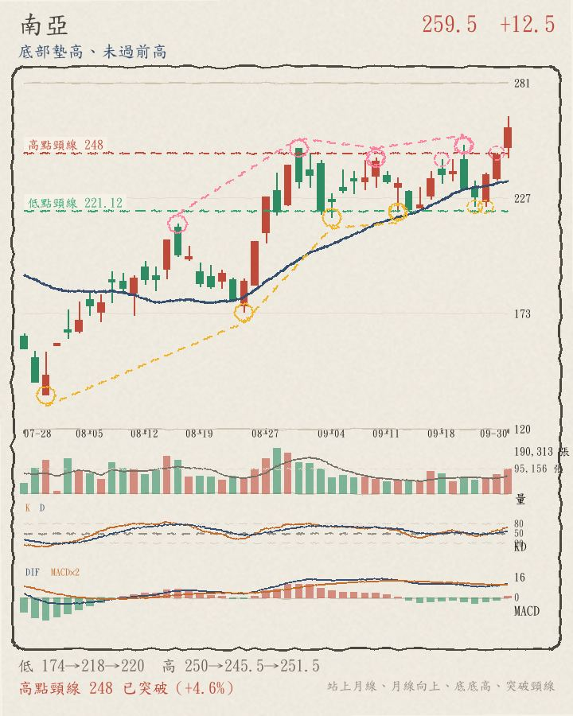
12:30 盤中 259.5（+5.06%），比加權指數強 3.75 個百分點、站上月線 233.925，已突破高點頸線 248，底部還在墊高（但高點沒同步創高）。
- 月線位置：現價 259.5 在月線 233.925 之上（+10.9%）；5 日線 236.7 也在月線之上（短均在上）；月線向上
- 量能：以已過交易時間推估，今天成交量約是 20 日均量的 1.59 倍（爆量），比 20 日均量大不少；上漲又量增，量價配合
- 關鍵價位：高點頸線 248 已站上；前一交易日高點 248（高於 4.6%）；今天盤中高點 265（低於 2.1%）；今天盤中低點 245.5（高於 5.7%）
- 轉折結構：低點 174、218、220.5 墊高（底底高），但高點 250、245.5、251.5 沒有同步創高；還沒確認的轉折低點 09-23 223、09-24 223；還沒確認的轉折高點 09-22 251.5、09-29 248（圖上虛線小圈）
群創 3481 上市
54.7 +5.0（+9.95%）
區間或轉弱 盤中成交值 258.92 億・全榜第 3 名（上市第 3 名）・相對大盤 +8.64
好條件 5/8：站上月線、月線向上、突破頸線、相對大盤強、攻擊量（量增＋上漲）
不好條件 0/8：無
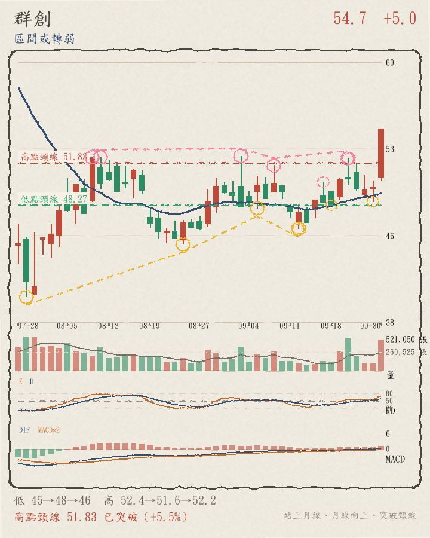
12:30 盤中 54.7（+9.95%），比加權指數強 8.64 個百分點、站上月線 49.02，已突破高點頸線 51.83，轉折還沒走出明顯方向。
- 月線位置：現價 54.7 在月線 49.02 之上（+11.6%）；5 日線 49.96 也在月線之上（短均在上）；月線向上
- 量能：以已過交易時間推估，今天成交量約是 20 日均量的 2.99 倍（爆量），比 20 日均量大不少；上漲又量增，量價配合
- 關鍵價位：高點頸線 51.83 已站上；前一交易日高點 50.3（高於 8.7%）；今天盤中高點 54.7（高於 0.0%）；今天盤中低點 50.3（高於 8.7%）
- 轉折結構：低點 44.95、48、46.25 與高點 52.4、51.6、52.2 都沒有明顯遞增，屬於區間震盪或轉弱；還沒確認的轉折低點 09-18 48.25、09-29 48.55；還沒確認的轉折高點 09-17 50.2、09-22 52.2（圖上虛線小圈）
聯發科 2454 上市
4980 +70.0（+1.43%）
高點墊高、底部不穩 盤中成交值 256.42 億・全榜第 4 名（上市第 4 名）・相對大盤 +0.12
好條件 4/8：站上月線、月線向上、頭頭高、相對大盤強
不好條件 1/8：貼近今日低點（1% 內）
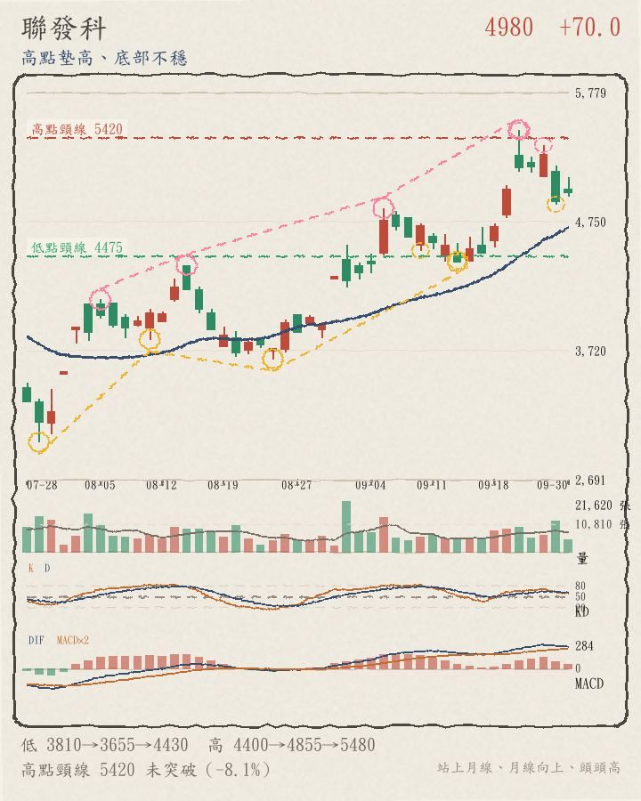
12:30 盤中 4980（+1.43%），比加權指數強 0.12 個百分點、站上月線 4648.5，離高點頸線 5420 還差 8.1%，高點還在墊高（但底部沒同步墊高）。
- 月線位置：現價 4980 在月線 4648.5 之上（+7.1%）；5 日線 5114 也在月線之上（短均在上）；月線向上
- 量能：以已過交易時間推估，今天成交量約是 20 日均量的 0.85 倍（量平），比 20 日均量少一些；上漲但量縮，量價背離
- 關鍵價位：高點頸線 5420 還沒突破，差 8.1%；前一交易日高點 5195（低於 4.1%）；今天盤中高點 5100（低於 2.4%）；今天盤中低點 4950（高於 0.6%）
- 轉折結構：高點 4400、4855、5480 墊高（頭頭高），但低點 3810、3655、4430 沒有同步墊高；還沒確認的轉折低點 09-15 4430、09-29 4890；還沒確認的轉折高點 09-22 5480、09-24 5360（圖上虛線小圈）
穩懋 3105 上櫃
542 +49.0（+9.94%）
高點墊高、底部不穩 盤中成交值 218.44 億・全榜第 5 名（上櫃第 1 名）・相對大盤 +8.63
好條件 6/8：站上月線、月線向上、頭頭高、突破頸線、相對大盤強、攻擊量（量增＋上漲）
不好條件 0/8：無
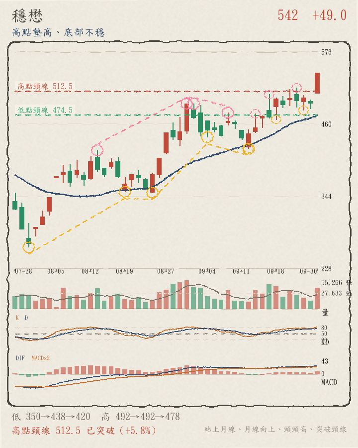
12:30 盤中 542（+9.94%），比加權指數強 8.63 個百分點、站上月線 469.25，已突破高點頸線 512.5，高點還在墊高（但底部沒同步墊高）。
- 月線位置：現價 542 在月線 469.25 之上（+15.5%）；5 日線 496.7 也在月線之上（短均在上）；月線向上
- 量能：以已過交易時間推估，今天成交量約是 20 日均量的 1.63 倍（爆量），比 20 日均量大不少；上漲又量增，量價配合
- 關鍵價位：高點頸線 512.5 已站上；前一交易日高點 498.5（高於 8.7%）；今天盤中高點 542（高於 0.0%）；今天盤中低點 509（高於 6.5%）
- 轉折結構：高點 492、492、478 墊高（頭頭高），但低點 349.5、438.5、420 沒有同步墊高；還沒確認的轉折低點 09-18 467、09-24 482；還沒確認的轉折高點 09-17 507、09-23 518（圖上虛線小圈）
合晶 6182 上櫃
133 +12.0（+9.92%）
高點墊高、底部不穩 盤中成交值 204.98 億・全榜第 6 名（上櫃第 2 名）・相對大盤 +8.61
好條件 6/8：站上月線、月線向上、頭頭高、突破頸線、相對大盤強、攻擊量（量增＋上漲）
不好條件 0/8：無
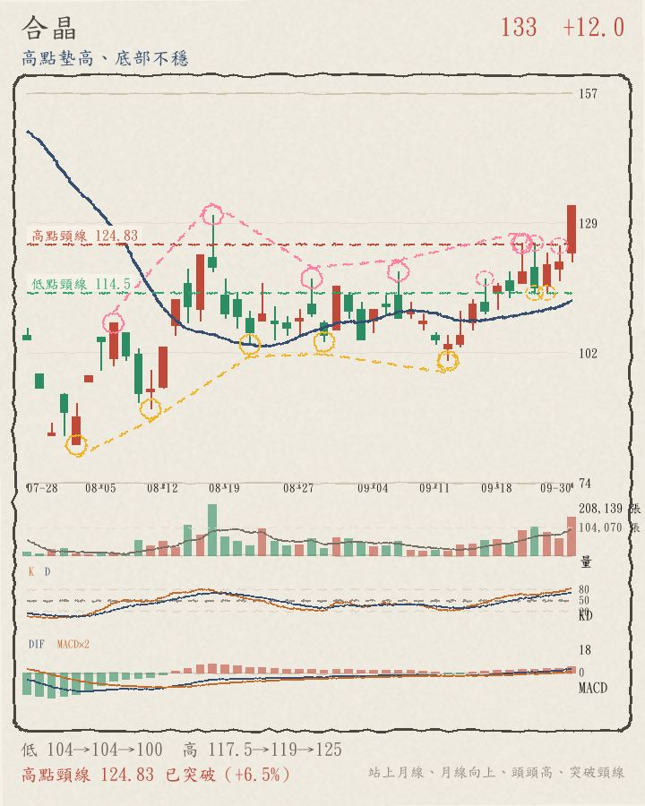
12:30 盤中 133（+9.92%），比加權指數強 8.61 個百分點、站上月線 111.5，已突破高點頸線 124.83，高點還在墊高（但底部沒同步墊高）。
- 月線位置：現價 133 在月線 111.5 之上（+19.3%）；5 日線 118.2 也在月線之上（短均在上）；月線向上
- 量能：以已過交易時間推估，今天成交量約是 20 日均量的 3.74 倍（爆量），比 20 日均量大不少；上漲又量增，量價配合
- 關鍵價位：高點頸線 124.83 已站上；前一交易日高點 124.5（高於 6.8%）；今天盤中高點 133（高於 0.0%）；今天盤中低點 121（高於 9.9%）
- 轉折結構：高點 117.5、119、125 墊高（頭頭高），但低點 103.5、104、100 沒有同步墊高；還沒確認的轉折低點 09-23 114.5、09-24 114.5；還沒確認的轉折高點 09-23 125、09-29 124.5（圖上虛線小圈）
環球晶 6488 上櫃
1035 +90.0（+9.52%）
區間或轉弱 盤中成交值 180.18 億・全榜第 7 名（上櫃第 3 名）・相對大盤 +8.21
好條件 4/8：站上月線、突破頸線、相對大盤強、攻擊量（量增＋上漲）
不好條件 1/8：月線下彎
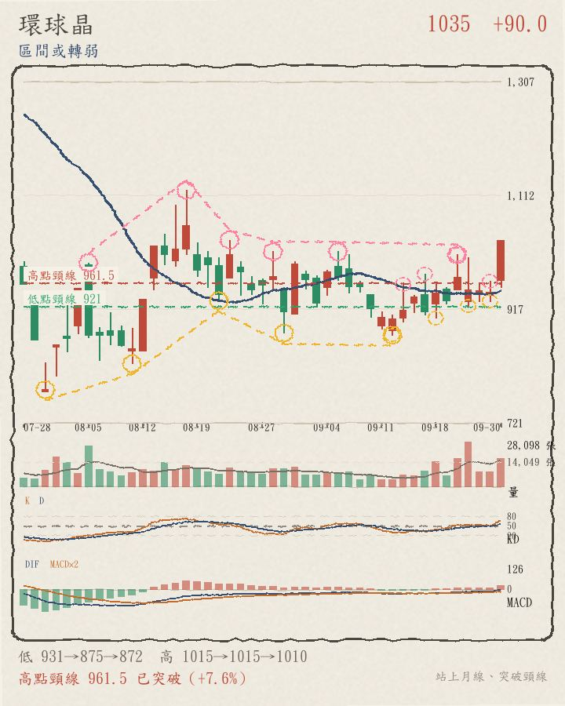
12:30 盤中 1035（+9.52%），比加權指數強 8.21 個百分點、站上月線 941.65，已突破高點頸線 961.5，轉折還沒走出明顯方向。
- 月線位置：現價 1035 在月線 941.65 之上（+9.9%）；5 日線 949 也在月線之上（短均在上）；月線向下
- 量能：以已過交易時間推估，今天成交量約是 20 日均量的 2.29 倍（爆量），比 20 日均量大不少；上漲又量增，量價配合
- 關鍵價位：高點頸線 961.5 已站上；前一交易日高點 964（高於 7.4%）；今天盤中高點 1035（高於 0.0%）；今天盤中低點 953（高於 8.6%）
- 轉折結構：低點 931、875、872 與高點 1015、1015、1010 都沒有明顯遞增，屬於區間震盪或轉弱；還沒確認的轉折低點 09-23 922、09-29 930；還沒確認的轉折高點 09-22 1010、09-29 964（圖上虛線小圈）
金像電 2368 上市
1115 -5.0（-0.45%）
高點墊高、底部不穩 盤中成交值 178.21 億・全榜第 8 名（上市第 5 名）・相對大盤 -1.76
好條件 3/8：站上月線、月線向上、頭頭高
不好條件 3/8：今日下跌、相對大盤弱、量增下跌（出貨）
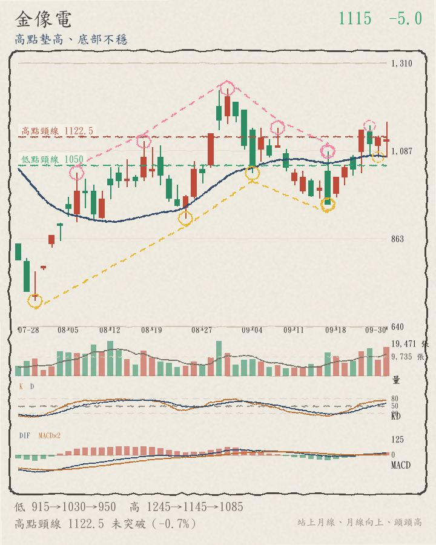
12:30 盤中 1115（-0.45%），比加權指數弱 1.76 個百分點、站上月線 1074.2，離高點頸線 1122.5 還差 0.7%，高點還在墊高（但底部沒同步墊高）。
- 月線位置：現價 1115 在月線 1074.2 之上（+3.8%）；5 日線 1090 也在月線之上（短均在上）；月線向上
- 量能：以已過交易時間推估，今天成交量約是 20 日均量的 2.33 倍（爆量），比 20 日均量大不少；下跌卻量增，量價背離
- 關鍵價位：高點頸線 1122.5 還沒突破，差 0.7%；前一交易日高點 1125（低於 0.9%）；今天盤中高點 1160（低於 3.9%）；今天盤中低點 1070（高於 4.2%）
- 轉折結構：高點 1245、1145、1085 墊高（頭頭高），但低點 915、1030、950 沒有同步墊高；還沒確認的轉折低點 09-17 950、09-29 1070；還沒確認的轉折高點 09-17 1085、09-24 1150（圖上虛線小圈）
景碩 3189 上市
965 +10.0（+1.05%）
高點墊高、底部不穩 盤中成交值 168.06 億・全榜第 9 名（上市第 6 名）・相對大盤 -0.26
好條件 6/8：站上月線、月線向上、頭頭高、突破頸線、攻擊量（量增＋上漲）、守住今日高檔（距今日高點 1% 內）
不好條件 1/8：相對大盤弱
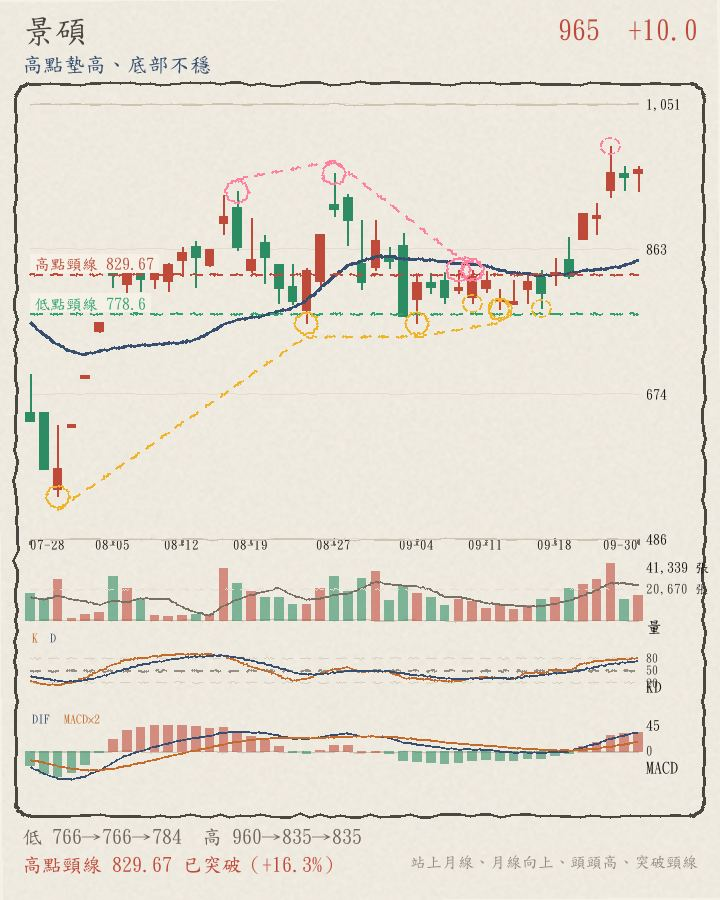
12:30 盤中 965（+1.05%），比加權指數弱 0.26 個百分點、站上月線 840.85，已突破高點頸線 829.67，高點還在墊高（但底部沒同步墊高）。
- 月線位置：現價 965 在月線 840.85 之上（+14.8%）；5 日線 911.8 也在月線之上（短均在上）；月線向上
- 量能：以已過交易時間推估，今天成交量約是 20 日均量的 1.15 倍（量增），比 20 日均量大不少；上漲又量增，量價配合
- 關鍵價位：高點頸線 829.67 已站上；前一交易日高點 969（低於 0.4%）；今天盤中高點 970（低於 0.5%）；今天盤中低點 937（高於 3.0%）
- 轉折結構：高點 960、835、835 墊高（頭頭高），但低點 766、766、784 沒有同步墊高；還沒確認的轉折低點 09-14 784、09-17 785；還沒確認的轉折高點 09-10 835、09-24 996（圖上虛線小圈）
友達 2409 上市
38.55 +3.5（+9.99%）
高點墊高、底部不穩 盤中成交值 162.8 億・全榜第 10 名（上市第 7 名）・相對大盤 +8.68
好條件 6/8：站上月線、月線向上、頭頭高、突破頸線、相對大盤強、攻擊量（量增＋上漲）
不好條件 0/8：無
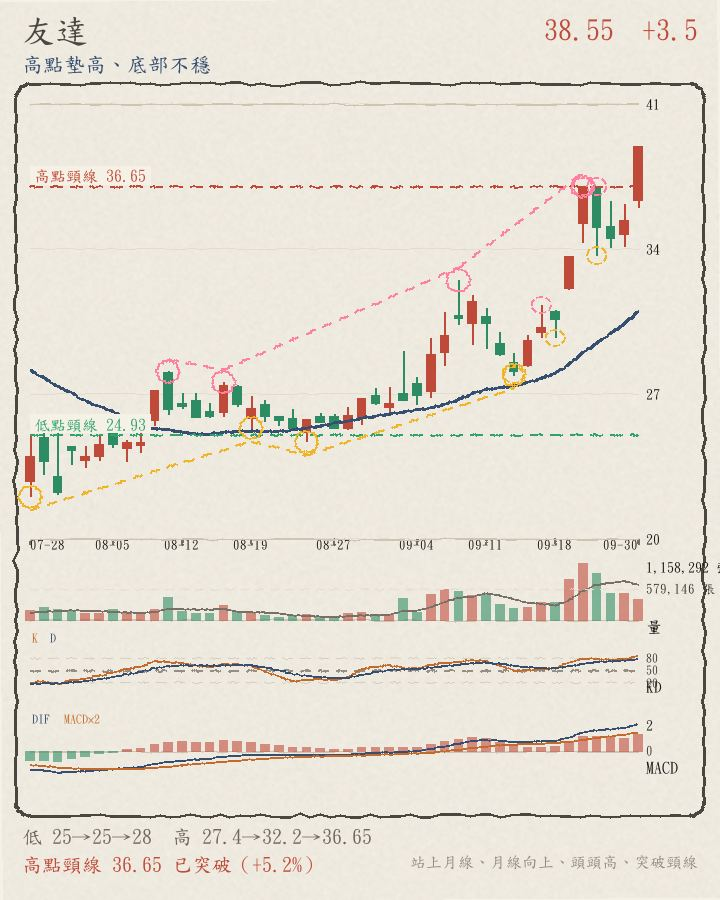
12:30 盤中 38.55（+9.99%），比加權指數強 8.68 個百分點、站上月線 30.165，已突破高點頸線 36.65，高點還在墊高（但底部沒同步墊高）。
- 月線位置：現價 38.55 在月線 30.165 之上（+27.8%）；5 日線 34.79 也在月線之上（短均在上）；月線向上
- 量能：以已過交易時間推估，今天成交量約是 20 日均量的 1.22 倍（量增），比 20 日均量大不少；上漲又量增，量價配合
- 關鍵價位：高點頸線 36.65 已站上；前一交易日高點 35.8（高於 7.7%）；今天盤中高點 38.55（高於 0.0%）；今天盤中低點 35.65（高於 8.1%）
- 轉折結構：高點 27.4、32.2、36.65 墊高（頭頭高），但低點 25.25、24.6、27.75 沒有同步墊高；還沒確認的轉折低點 09-18 29.5、09-23 33.4；還沒確認的轉折高點 09-22 36.65、09-23 36.65（圖上虛線小圈）
南亞科 2408 上市
517 +11.0（+2.17%）
區間或轉弱 盤中成交值 151.52 億・全榜第 11 名（上市第 8 名）・相對大盤 +0.86
好條件 3/8：站上月線、相對大盤強、守住今日高檔（距今日高點 1% 內）
不好條件 1/8：月線下彎
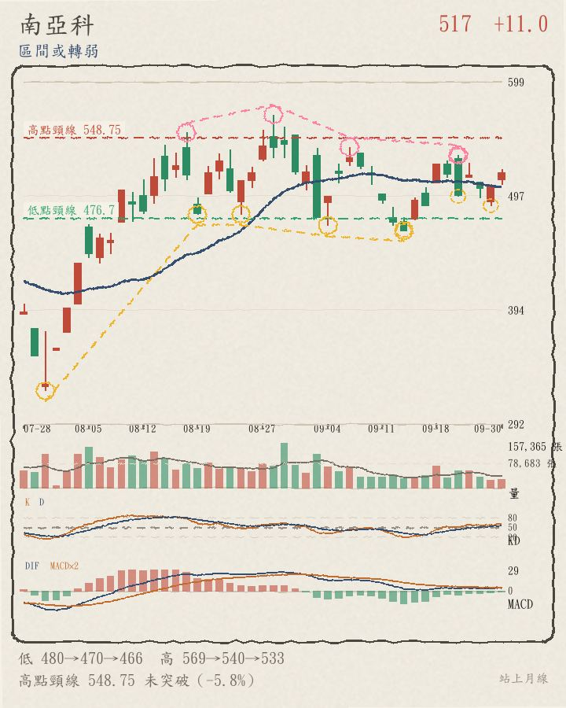
12:30 盤中 517（+2.17%），比加權指數強 0.86 個百分點、站上月線 505.625，離高點頸線 548.75 還差 5.8%，轉折還沒走出明顯方向。
- 月線位置：現價 517 在月線 505.625 之上（+2.2%）；5 日線 507.4 也在月線之上（短均在上）；月線向下
- 量能：以已過交易時間推估，今天成交量約是 20 日均量的 0.61 倍（量縮），比 20 日均量少很多；上漲但量縮，量價背離
- 關鍵價位：高點頸線 548.75 還沒突破，差 5.8%；前一交易日高點 507（高於 2.0%）；今天盤中高點 520（低於 0.6%）；今天盤中低點 507（高於 2.0%）
- 轉折結構：低點 480、470、465.5 與高點 569、540、533 都沒有明顯遞增，屬於區間震盪或轉弱；還沒確認的轉折低點 09-22 496、09-29 488；還沒確認的轉折高點 09-22 533（圖上虛線小圈）
台達電 2308 上市
1915 +80.0（+4.36%）
高點墊高、底部不穩 盤中成交值 132.86 億・全榜第 12 名（上市第 9 名）・相對大盤 +3.05
好條件 5/8：站上月線、月線向上、頭頭高、相對大盤強、守住今日高檔（距今日高點 1% 內）
不好條件 0/8：無
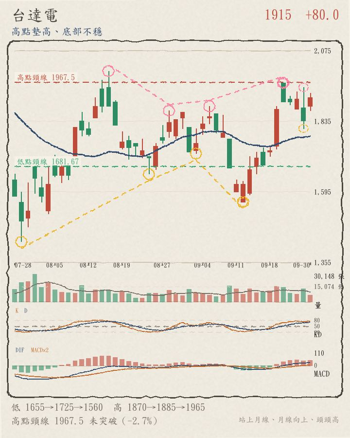
12:30 盤中 1915（+4.36%），比加權指數強 3.05 個百分點、站上月線 1780.25，離高點頸線 1967.5 還差 2.7%，高點還在墊高（但底部沒同步墊高）。
- 月線位置：現價 1915 在月線 1780.25 之上（+7.6%）；5 日線 1884 也在月線之上（短均在上）；月線向上
- 量能：以已過交易時間推估，今天成交量約是 20 日均量的 0.83 倍（量平），比 20 日均量少很多；上漲但量縮，量價背離
- 關鍵價位：高點頸線 1967.5 還沒突破，差 2.7%；前一交易日高點 1950（低於 1.8%）；今天盤中高點 1930（低於 0.8%）；今天盤中低點 1870（高於 2.4%）
- 轉折結構：高點 1870、1885、1965 墊高（頭頭高），但低點 1655、1725、1560 沒有同步墊高；還沒確認的轉折低點 09-14 1560、09-29 1810；還沒確認的轉折高點 09-22 1965、09-29 1950（圖上虛線小圈）
貿聯-KY 3665 上市
2675 +230.0（+9.41%）
高點墊高、底部不穩 盤中成交值 127.65 億・全榜第 13 名（上市第 10 名）・相對大盤 +8.10
好條件 7/8：站上月線、月線向上、頭頭高、突破頸線、相對大盤強、攻擊量（量增＋上漲）、守住今日高檔（距今日高點 1% 內）
不好條件 0/8：無
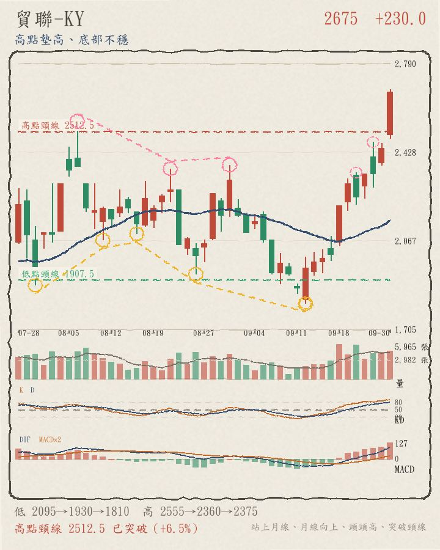
12:30 盤中 2675（+9.41%），比加權指數強 8.10 個百分點、站上月線 2125.25，已突破高點頸線 2512.5，高點還在墊高（但底部沒同步墊高）。
- 月線位置：現價 2675 在月線 2125.25 之上（+25.9%）；5 日線 2334 也在月線之上（短均在上）；月線向上
- 量能：以已過交易時間推估，今天成交量約是 20 日均量的 1.98 倍（爆量），比 20 日均量大不少；上漲又量增，量價配合
- 關鍵價位：高點頸線 2512.5 已站上；前一交易日高點 2465（高於 8.5%）；今天盤中高點 2685（低於 0.4%）；今天盤中低點 2485（高於 7.6%）
- 轉折結構：高點 2555、2360、2375 墊高（頭頭高），但低點 2095、1930、1810 沒有同步墊高；還沒確認的轉折低點 09-14 1810；還沒確認的轉折高點 09-22 2345、09-24 2470（圖上虛線小圈）
聯茂 6213 上市
634 +14.0（+2.26%）
高點墊高、底部不穩 盤中成交值 122.15 億・全榜第 14 名（上市第 11 名）・相對大盤 +0.95
好條件 6/8：站上月線、月線向上、頭頭高、突破頸線、相對大盤強、攻擊量（量增＋上漲）
不好條件 0/8：無
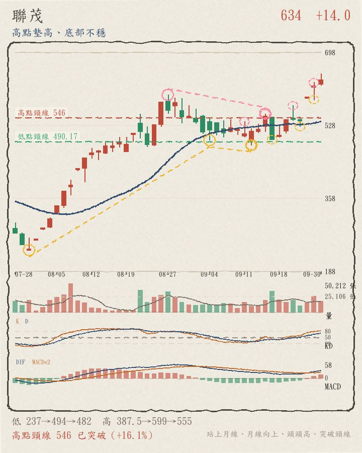
12:30 盤中 634（+2.26%），比加權指數強 0.95 個百分點、站上月線 533.1，已突破高點頸線 546，高點還在墊高（但底部沒同步墊高）。
- 月線位置：現價 634 在月線 533.1 之上（+18.9%）；5 日線 568.2 也在月線之上（短均在上）；月線向上
- 量能：以已過交易時間推估，今天成交量約是 20 日均量的 1.51 倍（爆量），比 20 日均量大不少；上漲又量增，量價配合
- 關鍵價位：高點頸線 546 已站上；前一交易日高點 628（高於 1.0%）；今天盤中高點 649（低於 2.3%）；今天盤中低點 622（高於 1.9%）
- 轉折結構：高點 387.5、599、555 墊高（頭頭高），但低點 237、493.5、482 沒有同步墊高；還沒確認的轉折低點 09-23 525、09-29 588；還沒確認的轉折高點 09-22 574、09-29 628（圖上虛線小圈）
華邦電 2344 上市
177.5 +3.5（+2.01%）
區間或轉弱 盤中成交值 108.5 億・全榜第 15 名（上市第 12 名）・相對大盤 +0.70
好條件 3/8：站上月線、相對大盤強、守住今日高檔（距今日高點 1% 內）
不好條件 1/8：月線下彎
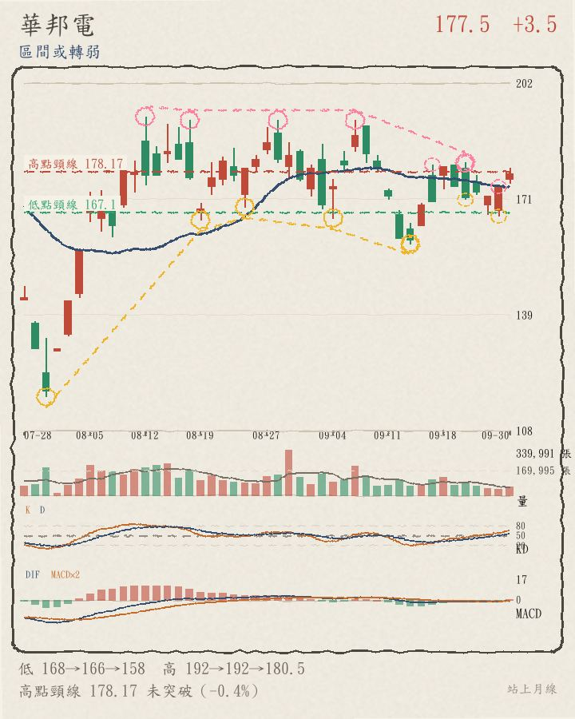
12:30 盤中 177.5（+2.01%），比加權指數強 0.70 個百分點、站上月線 174.175，離高點頸線 178.17 還差 0.4%，轉折還沒走出明顯方向。
- 月線位置：現價 177.5 在月線 174.175 之上（+1.9%）；5 日線 172.6 也在月線之下（短均在下）；月線向下
- 量能：以已過交易時間推估，今天成交量約是 20 日均量的 0.65 倍（量縮），比 20 日均量少很多；上漲但量縮，量價背離
- 關鍵價位：高點頸線 178.17 還沒突破，差 0.4%；前一交易日高點 174（高於 2.0%）；今天盤中高點 179（低於 0.8%）；今天盤中低點 175（高於 1.4%）
- 轉折結構：低點 168.5、165.5、158.5 與高點 192、192、180.5 都沒有明顯遞增，屬於區間震盪或轉弱；還沒確認的轉折低點 09-22 170.5、09-29 166；還沒確認的轉折高點 09-22 180.5、09-29 174（圖上虛線小圈）
南電 8046 上市
1295 +25.0（+1.97%）
上升趨勢（底底高＋頭頭高） 盤中成交值 108.4 億・全榜第 16 名（上市第 13 名）・相對大盤 +0.66
好條件 5/8：站上月線、底底高、頭頭高、相對大盤強、守住今日高檔（距今日高點 1% 內）
不好條件 1/8：月線下彎
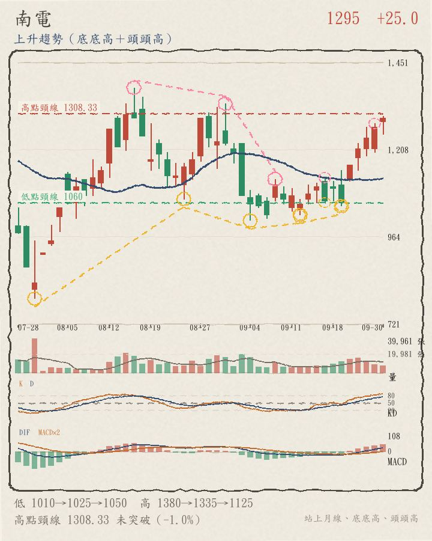
12:30 盤中 1295（+1.97%），比加權指數強 0.66 個百分點、站上月線 1124，離高點頸線 1308.33 還差 1.0%，轉折結構仍是底底高＋頭頭高。
- 月線位置：現價 1295 在月線 1124 之上（+15.2%）；5 日線 1189 也在月線之上（短均在上）；月線向下
- 量能：以已過交易時間推估，今天成交量約是 20 日均量的 0.91 倍（量平），比 20 日均量少一些
- 關鍵價位：高點頸線 1308.33 還沒突破，差 1.0%；前一交易日高點 1280（高於 1.2%）；今天盤中高點 1300（低於 0.4%）；今天盤中低點 1250（高於 3.6%）
- 轉折結構：低點 1010、1025、1050 一路墊高、高點 1380、1335、1125 也一路墊高，是底底高＋頭頭高；還沒確認的轉折低點 09-17 1060、09-21 1050；還沒確認的轉折高點 09-17 1130、09-29 1280（圖上虛線小圈）
聯電 2303 上市
156.5 +3.0（+1.95%）
上升趨勢（底底高＋頭頭高） 盤中成交值 107.68 億・全榜第 17 名（上市第 14 名）・相對大盤 +0.64
好條件 7/8：站上月線、月線向上、底底高、頭頭高、突破頸線、相對大盤強、守住今日高檔（距今日高點 1% 內）
不好條件 1/8：貼近今日低點（1% 內）
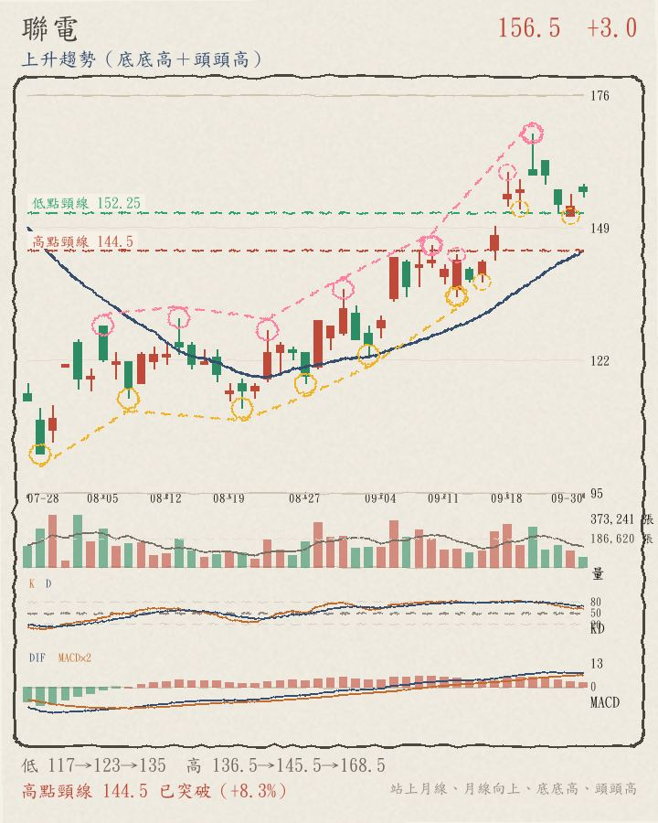
12:30 盤中 156.5（+1.95%），比加權指數強 0.64 個百分點、站上月線 142.9，已突破高點頸線 144.5，轉折結構仍是底底高＋頭頭高。
- 月線位置：現價 156.5 在月線 142.9 之上（+9.5%）；5 日線 156.9 也在月線之上（短均在上）；月線向上
- 量能：以已過交易時間推估，今天成交量約是 20 日均量的 0.45 倍（量縮），比 20 日均量少很多；上漲但量縮，量價背離
- 關鍵價位：高點頸線 144.5 已站上；前一交易日高點 156（高於 0.3%）；今天盤中高點 158（低於 0.9%）；今天盤中低點 155.5（高於 0.6%）
- 轉折結構：低點 117、123、135 一路墊高、高點 136.5、145.5、168.5 也一路墊高，是底底高＋頭頭高；還沒確認的轉折低點 09-21 153、09-29 151.5；還沒確認的轉折高點 09-18 160.5、09-22 168.5（圖上虛線小圈）
臻鼎-KY 4958 上市
499 +0.5（+0.10%）
底部墊高、未過前高 盤中成交值 96.87 億・全榜第 18 名（上市第 15 名）・相對大盤 -1.21
好條件 3/8：站上月線、月線向上、底底高
不好條件 1/8：相對大盤弱
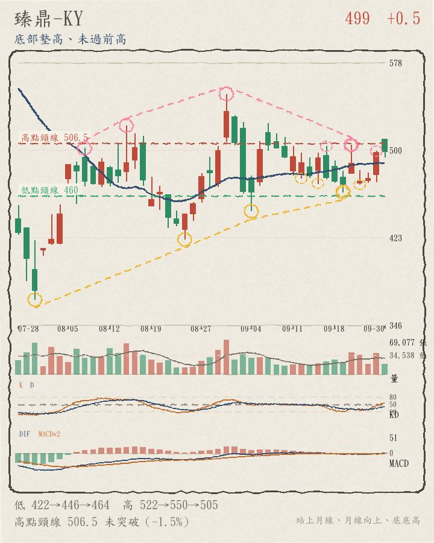
12:30 盤中 499（+0.10%），比加權指數弱 1.21 個百分點、站上月線 489.1，離高點頸線 506.5 還差 1.5%，底部還在墊高（但高點沒同步創高）。
- 月線位置：現價 499 在月線 489.1 之上（+2.0%）；5 日線 481.2 也在月線之下（短均在下）；月線向上
- 量能：以已過交易時間推估，今天成交量約是 20 日均量的 0.82 倍（量平），比 20 日均量少很多；上漲但量縮，量價背離
- 關鍵價位：高點頸線 506.5 還沒突破，差 1.5%；前一交易日高點 499.5（低於 0.1%）；今天盤中高點 510（低於 2.2%）；今天盤中低點 494（高於 1.0%）
- 轉折結構：低點 421.5、446.5、463.5 墊高（底底高），但高點 522、550、505 沒有同步創高；還沒確認的轉折低點 09-21 463.5、09-23 470；還沒確認的轉折高點 09-22 505、09-29 499.5（圖上虛線小圈）
奇鋐 3017 上市
3450 +50.0（+1.47%）
高點墊高、底部不穩 盤中成交值 96.81 億・全榜第 19 名（上市第 16 名）・相對大盤 +0.16
好條件 5/8：站上月線、月線向上、頭頭高、相對大盤強、攻擊量（量增＋上漲）
不好條件 0/8：無
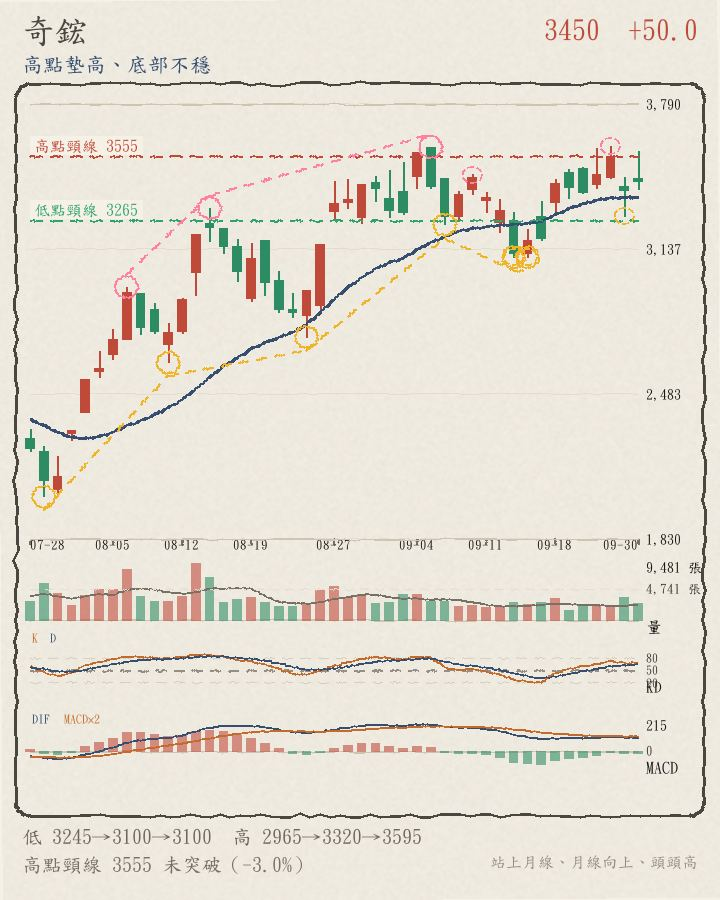
12:30 盤中 3450（+1.47%），比加權指數強 0.16 個百分點、站上月線 3368.75，離高點頸線 3555 還差 3.0%，高點還在墊高（但底部沒同步墊高）。
- 月線位置：現價 3450 在月線 3368.75 之上（+2.4%）；5 日線 3446 也在月線之上（短均在上）；月線向上
- 量能：以已過交易時間推估，今天成交量約是 20 日均量的 1.25 倍（量增），比 20 日均量大不少；上漲又量增，量價配合
- 關鍵價位：高點頸線 3555 還沒突破，差 3.0%；前一交易日高點 3460（低於 0.3%）；今天盤中高點 3575（低於 3.5%）；今天盤中低點 3405（高於 1.3%）
- 轉折結構：高點 2965、3320、3595 墊高（頭頭高），但低點 3245、3100、3100 沒有同步墊高；還沒確認的轉折低點 09-16 3100、09-29 3285；還沒確認的轉折高點 09-10 3470、09-24 3600（圖上虛線小圈）
台虹 8039 上市
300.5 +27.0（+9.87%）
區間或轉弱 盤中成交值 92.36 億・全榜第 20 名（上市第 17 名）・相對大盤 +8.56
好條件 4/8：站上月線、突破頸線、相對大盤強、攻擊量（量增＋上漲）
不好條件 1/8：月線下彎
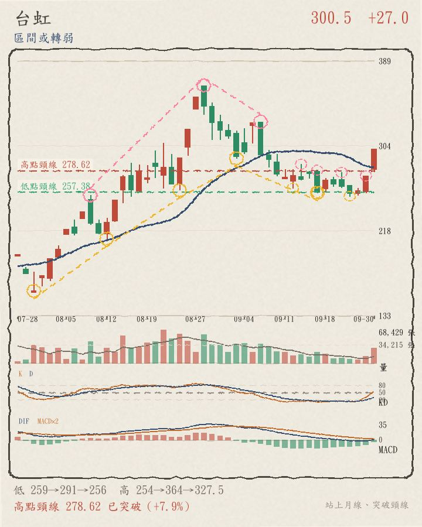
12:30 盤中 300.5（+9.87%），比加權指數強 8.56 個百分點、站上月線 283.475，已突破高點頸線 278.62，轉折還沒走出明顯方向。
- 月線位置：現價 300.5 在月線 283.475 之上（+6.0%）；5 日線 263.1 也在月線之下（短均在下）；月線向下
- 量能：以已過交易時間推估，今天成交量約是 20 日均量的 1.59 倍（爆量），比 20 日均量大不少；上漲又量增，量價配合
- 關鍵價位：高點頸線 278.62 已站上；前一交易日高點 273.5（高於 9.9%）；今天盤中高點 300.5（高於 0.0%）；今天盤中低點 277.5（高於 8.3%）
- 轉折結構：低點 259、291、256.5 與高點 254、364、327.5 都沒有明顯遞增，屬於區間震盪或轉弱；還沒確認的轉折低點 09-17 256.5、09-23 253；還沒確認的轉折高點 09-22 277、09-29 273.5（圖上虛線小圈）
國巨* 2327 上市
551 +3.0（+0.55%）
區間或轉弱 盤中成交值 88.31 億・全榜第 21 名（上市第 18 名）・相對大盤 -0.76
好條件 1/8：月線向上
不好條件 3/8：相對大盤弱、在月線之下、貼近今日低點（1% 內）
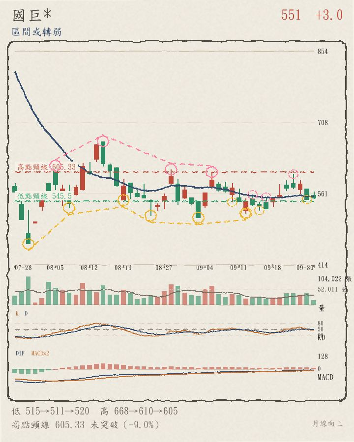
12:30 盤中 551（+0.55%），比加權指數弱 0.76 個百分點、跌破月線 554.45，離高點頸線 605.33 還差 9.0%，轉折還沒走出明顯方向。
- 月線位置：現價 551 在月線 554.45 之下（-0.6%）；5 日線 565.8 也在月線之上（短均在上）；月線向上
- 量能：以已過交易時間推估，今天成交量約是 20 日均量的 0.54 倍（量縮），比 20 日均量少很多；上漲但量縮，量價背離
- 關鍵價位：高點頸線 605.33 還沒突破，差 9.0%；前一交易日高點 570（低於 3.3%）；今天盤中高點 564（低於 2.3%）；今天盤中低點 550（高於 0.2%）
- 轉折結構：低點 515、511、520 與高點 668、610、605 都沒有明顯遞增，屬於區間震盪或轉弱；還沒確認的轉折低點 09-16 526、09-29 548；還沒確認的轉折高點 09-17 553、09-23 601（圖上虛線小圈）
南茂 8150 上市
114.5 +10.0（+9.57%）
高點墊高、底部不穩 盤中成交值 87.06 億・全榜第 22 名（上市第 19 名）・相對大盤 +8.26
好條件 6/8：站上月線、月線向上、頭頭高、突破頸線、相對大盤強、攻擊量（量增＋上漲）
不好條件 0/8：無
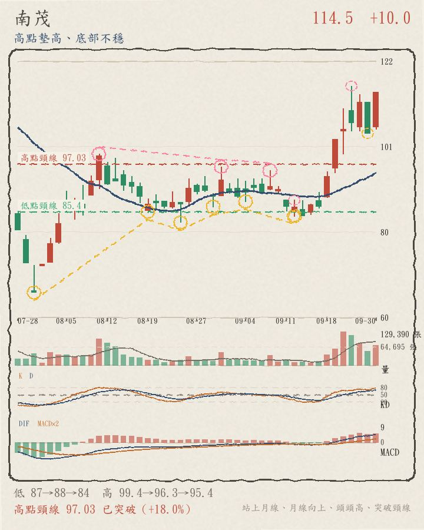
12:30 盤中 114.5（+9.57%），比加權指數強 8.26 個百分點、站上月線 93.66，已突破高點頸線 97.03，高點還在墊高（但底部沒同步墊高）。
- 月線位置：現價 114.5 在月線 93.66 之上（+22.2%）；5 日線 106.4 也在月線之上（短均在上）；月線向上
- 量能：以已過交易時間推估，今天成交量約是 20 日均量的 2.69 倍（爆量），比 20 日均量大不少；上漲又量增，量價配合
- 關鍵價位：高點頸線 97.03 已站上；前一交易日高點 112（高於 2.2%）；今天盤中高點 114.5（高於 0.0%）；今天盤中低點 105.5（高於 8.5%）
- 轉折結構：高點 99.4、96.3、95.4 墊高（頭頭高），但低點 86.6、87.9、84.3 沒有同步墊高；還沒確認的轉折低點 09-14 84.3、09-29 104.5；還沒確認的轉折高點 09-14 88.2、09-23 116（圖上虛線小圈）
欣興 3037 上市
1170 +5.0（+0.43%）
高點墊高、底部不穩 盤中成交值 82.67 億・全榜第 23 名（上市第 20 名）・相對大盤 -0.88
好條件 4/8：站上月線、月線向上、頭頭高、突破頸線
不好條件 1/8：相對大盤弱
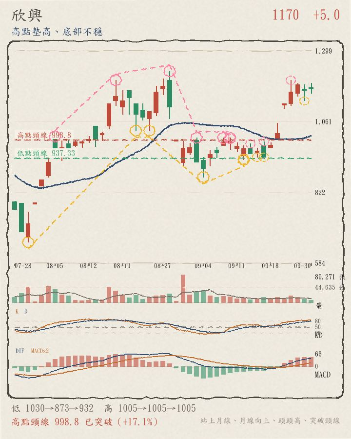
12:30 盤中 1170（+0.43%），比加權指數弱 0.88 個百分點、站上月線 1004.4，已突破高點頸線 998.8，高點還在墊高（但底部沒同步墊高）。
- 月線位置：現價 1170 在月線 1004.4 之上（+16.5%）；5 日線 1130 也在月線之上（短均在上）；月線向上
- 量能：以已過交易時間推估，今天成交量約是 20 日均量的 0.42 倍（量縮），比 20 日均量少很多；上漲但量縮，量價背離
- 關鍵價位：高點頸線 998.8 已站上；前一交易日高點 1185（低於 1.3%）；今天盤中高點 1190（低於 1.7%）；今天盤中低點 1155（高於 1.3%）
- 轉折結構：高點 1005、1005、1005 墊高（頭頭高），但低點 1030、873、932 沒有同步墊高；還沒確認的轉折低點 09-17 940、09-29 1130；還沒確認的轉折高點 09-17 993、09-23 1200（圖上虛線小圈）
智邦 2345 上市
1770 -40.0（-2.21%）
區間或轉弱 盤中成交值 81.3 億・全榜第 24 名（上市第 21 名）・相對大盤 -3.52
好條件 0/8：無
不好條件 7/8：跌破前低、今日下跌、相對大盤弱、在月線之下、量增下跌（出貨）、跌破昨日低點、月線下彎
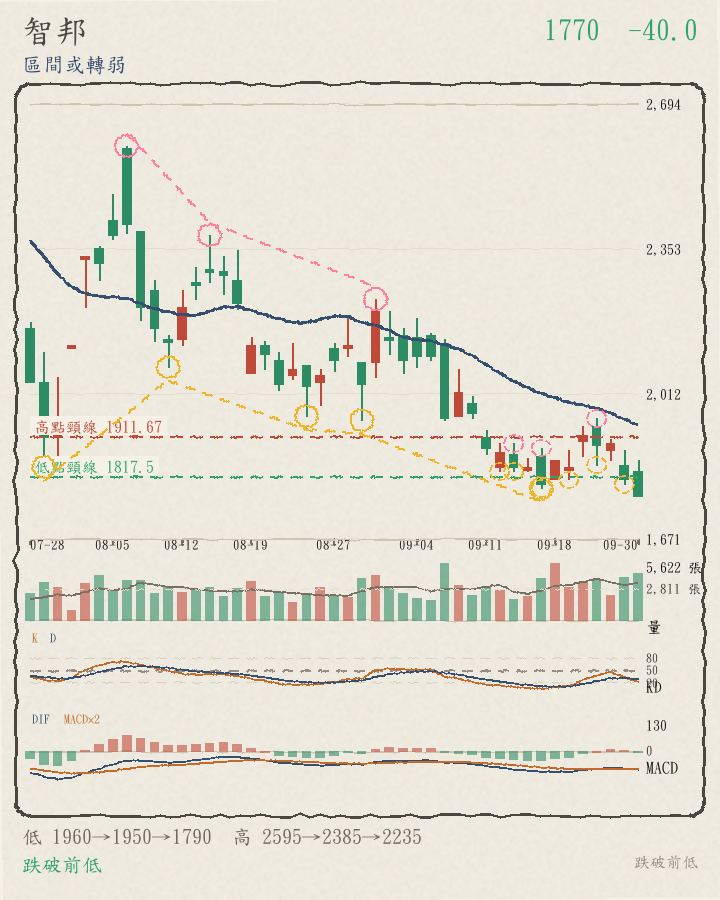
12:30 盤中 1770（-2.21%），比加權指數弱 3.52 個百分點、跌破月線 1952.5，離高點頸線 1911.67 還差 7.4%，轉折還沒走出明顯方向。
- 月線位置：現價 1770 在月線 1952.5 之下（-9.3%）；5 日線 1870 也在月線之下（短均在下）；月線向下
- 量能：以已過交易時間推估，今天成交量約是 20 日均量的 1.79 倍（爆量），比 20 日均量大不少；下跌卻量增，量價背離
- 關鍵價位：已跌破前一個轉折低點；高點頸線 1911.67 還在現價上方 7.4%；前一交易日高點 1880（低於 5.9%）；今天盤中高點 1855（低於 4.6%）；今天盤中低點 1770（高於 0.0%）
- 轉折結構：低點 1960、1950、1790 與高點 2595、2385、2235 都沒有明顯遞增，屬於區間震盪或轉弱；還沒確認的轉折低點 09-23 1845、09-29 1800；還沒確認的轉折高點 09-17 1885、09-23 1955（圖上虛線小圈）
台燿 6274 上櫃
1520 +35.0（+2.36%）
高點墊高、底部不穩 盤中成交值 76.33 億・全榜第 25 名（上櫃第 4 名）・相對大盤 +1.05
好條件 3/8：站上月線、頭頭高、相對大盤強
不好條件 1/8：月線下彎
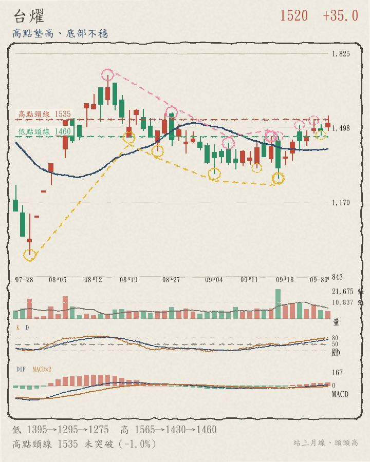
12:30 盤中 1520（+2.36%），比加權指數強 1.05 個百分點、站上月線 1401.25，離高點頸線 1535 還差 1.0%，高點還在墊高（但底部沒同步墊高）。
- 月線位置：現價 1520 在月線 1401.25 之上（+8.5%）；5 日線 1463 也在月線之上（短均在上）；月線向下
- 量能：以已過交易時間推估，今天成交量約是 20 日均量的 0.87 倍（量平），比 20 日均量少一些
- 關鍵價位：高點頸線 1535 還沒突破，差 1.0%；前一交易日高點 1515（高於 0.3%）；今天盤中高點 1550（低於 1.9%）；今天盤中低點 1485（高於 2.4%）
- 轉折結構：高點 1565、1430、1460 墊高（頭頭高），但低點 1395、1295、1275 沒有同步墊高；還沒確認的轉折低點 09-17 1275、09-29 1465；還沒確認的轉折高點 09-22 1510、09-24 1530（圖上虛線小圈）
中美晶 5483 上櫃
207.5 +18.5（+9.79%）
區間或轉弱 盤中成交值 73.38 億・全榜第 26 名（上櫃第 5 名）・相對大盤 +8.48
好條件 5/8：站上月線、月線向上、突破頸線、相對大盤強、攻擊量（量增＋上漲）
不好條件 0/8：無
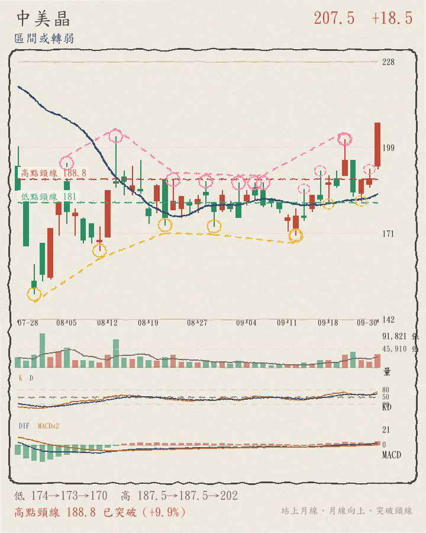
12:30 盤中 207.5（+9.79%），比加權指數強 8.48 個百分點、站上月線 182.425，已突破高點頸線 188.8，轉折還沒走出明顯方向。
- 月線位置：現價 207.5 在月線 182.425 之上（+13.8%）；5 日線 188.7 也在月線之上（短均在上）；月線向上
- 量能：以已過交易時間推估，今天成交量約是 20 日均量的 3.09 倍（爆量），比 20 日均量大不少；上漲又量增，量價配合
- 關鍵價位：高點頸線 188.8 已站上；前一交易日高點 192（高於 8.1%）；今天盤中高點 207.5（高於 0.0%）；今天盤中低點 192（高於 8.1%）
- 轉折結構：低點 173.5、173、170 與高點 187.5、187.5、202 都沒有明顯遞增，屬於區間震盪或轉弱；還沒確認的轉折低點 09-18 180.5、09-24 181.5；還沒確認的轉折高點 09-22 202、09-29 192（圖上虛線小圈）
力旺 3529 上櫃
3345 +40.0（+1.21%）
上升趨勢（底底高＋頭頭高） 盤中成交值 71.45 億・全榜第 27 名（上櫃第 6 名）・相對大盤 -0.10
好條件 5/8：站上月線、月線向上、底底高、頭頭高、攻擊量（量增＋上漲）
不好條件 2/8：相對大盤弱、貼近今日低點（1% 內）
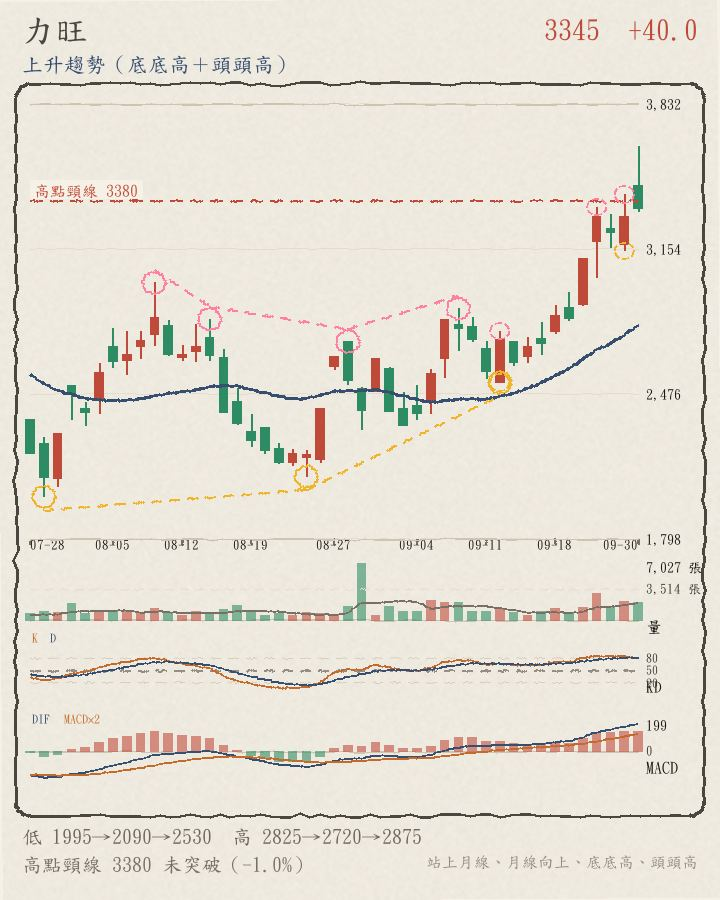
12:30 盤中 3345（+1.21%），比加權指數弱 0.10 個百分點、站上月線 2751.25，離高點頸線 3380 還差 1.0%，轉折結構仍是底底高＋頭頭高。
- 月線位置：現價 3345 在月線 2751.25 之上（+21.6%）；5 日線 3156 也在月線之上（短均在上）；月線向上
- 量能：以已過交易時間推估，今天成交量約是 20 日均量的 1.60 倍（爆量），比 20 日均量大不少；上漲又量增，量價配合
- 關鍵價位：高點頸線 3380 還沒突破，差 1.0%；前一交易日高點 3410（低於 1.9%）；今天盤中高點 3635（低於 8.0%）；今天盤中低點 3330（高於 0.5%）
- 轉折結構：低點 1995、2090、2530 一路墊高、高點 2825、2720、2875 也一路墊高，是底底高＋頭頭高；還沒確認的轉折低點 09-14 2530、09-29 3145；還沒確認的轉折高點 09-23 3350、09-29 3410（圖上虛線小圈）
高力 8996 上市
1595 +10.0（+0.63%）
底部墊高、未過前高 盤中成交值 61.82 億・全榜第 28 名（上市第 22 名）・相對大盤 -0.68
好條件 4/8：站上月線、月線向上、底底高、攻擊量（量增＋上漲）
不好條件 1/8：相對大盤弱
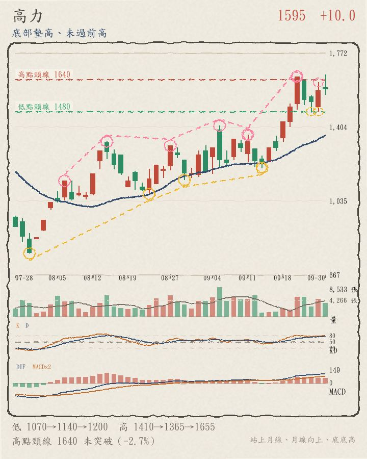
12:30 盤中 1595（+0.63%），比加權指數弱 0.68 個百分點、站上月線 1342，離高點頸線 1640 還差 2.7%，底部還在墊高（但高點沒同步創高）。
- 月線位置：現價 1595 在月線 1342 之上（+18.9%）；5 日線 1563 也在月線之上（短均在上）；月線向上
- 量能：以已過交易時間推估，今天成交量約是 20 日均量的 1.24 倍（量增），比 20 日均量大不少；上漲又量增，量價配合
- 關鍵價位：高點頸線 1640 還沒突破，差 2.7%；前一交易日高點 1625（低於 1.8%）；今天盤中高點 1665（低於 4.2%）；今天盤中低點 1565（高於 1.9%）
- 轉折結構：低點 1070、1140、1200 墊高（底底高），但高點 1410、1365、1655 沒有同步創高；還沒確認的轉折低點 09-24 1480、09-29 1480；還沒確認的轉折高點 09-22 1655、09-29 1625（圖上虛線小圈）
日月光投控 3711 上市
707 +20.0（+2.91%）
上升趨勢（底底高＋頭頭高） 盤中成交值 61.7 億・全榜第 29 名（上市第 23 名）・相對大盤 +1.60
好條件 5/8：站上月線、月線向上、底底高、頭頭高、相對大盤強
不好條件 1/8：貼近今日低點（1% 內）
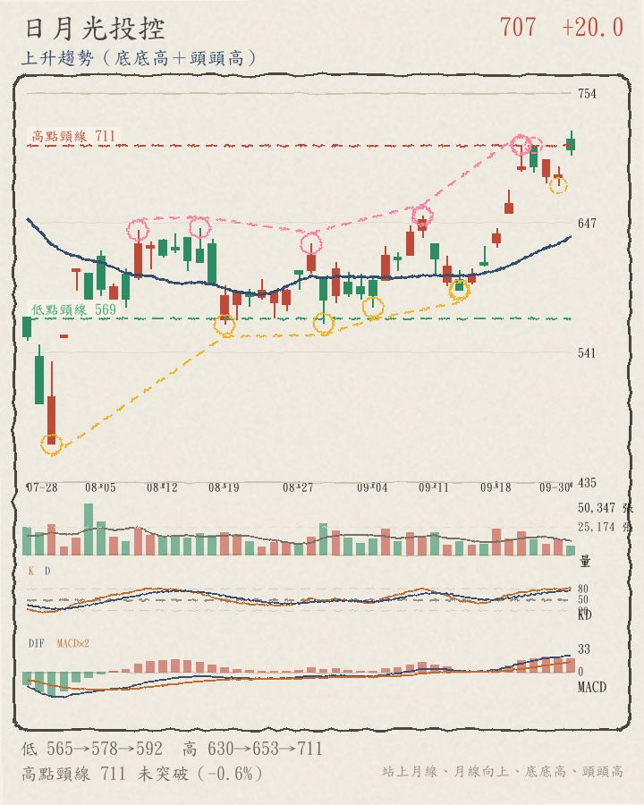
12:30 盤中 707（+2.91%），比加權指數強 1.60 個百分點、站上月線 630.15，離高點頸線 711 還差 0.6%，轉折結構仍是底底高＋頭頭高。
- 月線位置：現價 707 在月線 630.15 之上（+12.2%）；5 日線 687 也在月線之上（短均在上）；月線向上
- 量能：以已過交易時間推估，今天成交量約是 20 日均量的 0.65 倍（量縮），比 20 日均量少很多；上漲但量縮，量價背離
- 關鍵價位：高點頸線 711 還沒突破，差 0.6%；前一交易日高點 693（高於 2.0%）；今天盤中高點 723（低於 2.2%）；今天盤中低點 703（高於 0.6%）
- 轉折結構：低點 565、578、592 一路墊高、高點 630、653、711 也一路墊高，是底底高＋頭頭高；還沒確認的轉折低點 09-15 592、09-29 678；還沒確認的轉折高點 09-22 711、09-23 711（圖上虛線小圈）
嘉晶 3016 上市
172 -0.5（-0.29%）
上升趨勢（底底高＋頭頭高） 盤中成交值 61.56 億・全榜第 30 名（上市第 24 名）・相對大盤 -1.60
好條件 6/8：站上月線、月線向上、底底高、頭頭高、突破頸線、守住今日高檔（距今日高點 1% 內）
不好條件 3/8：今日下跌、相對大盤弱、量增下跌（出貨）
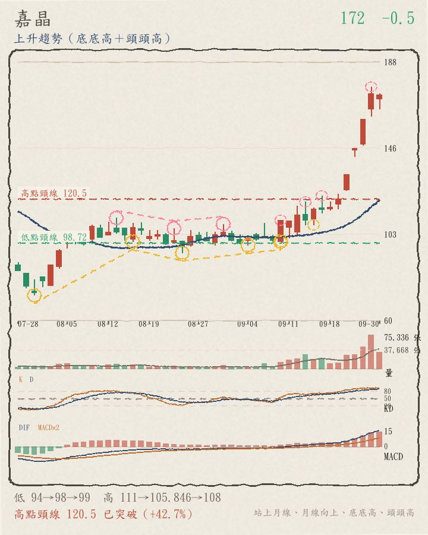
12:30 盤中 172（-0.29%），比加權指數弱 1.60 個百分點、站上月線 116.44，已突破高點頸線 120.5，轉折結構仍是底底高＋頭頭高。
- 月線位置：現價 172 在月線 116.44 之上（+47.7%）；5 日線 146.2 也在月線之上（短均在上）；月線向上
- 量能：以已過交易時間推估，今天成交量約是 20 日均量的 3.02 倍（爆量），比 20 日均量大不少；下跌卻量增，量價背離
- 關鍵價位：高點頸線 120.5 已站上；前一交易日高點 176（低於 2.3%）；今天盤中高點 172.5（低於 0.3%）；今天盤中低點 165（高於 4.2%）
- 轉折結構：低點 93.7634、97.5、99.3 一路墊高、高點 111、105.846、108 也一路墊高，是底底高＋頭頭高；還沒確認的轉折低點 09-10 99.3、09-16 107.5；還沒確認的轉折高點 09-17 122、09-29 176（圖上虛線小圈）
健策 3653 上市
6765 -130.0（-1.89%）
高點墊高、底部不穩 盤中成交值 58.99 億・全榜第 31 名（上市第 25 名）・相對大盤 -3.20
好條件 4/8：站上月線、月線向上、頭頭高、突破頸線
不好條件 4/8：今日下跌、相對大盤弱、貼近今日低點（1% 內）、跌破昨日低點
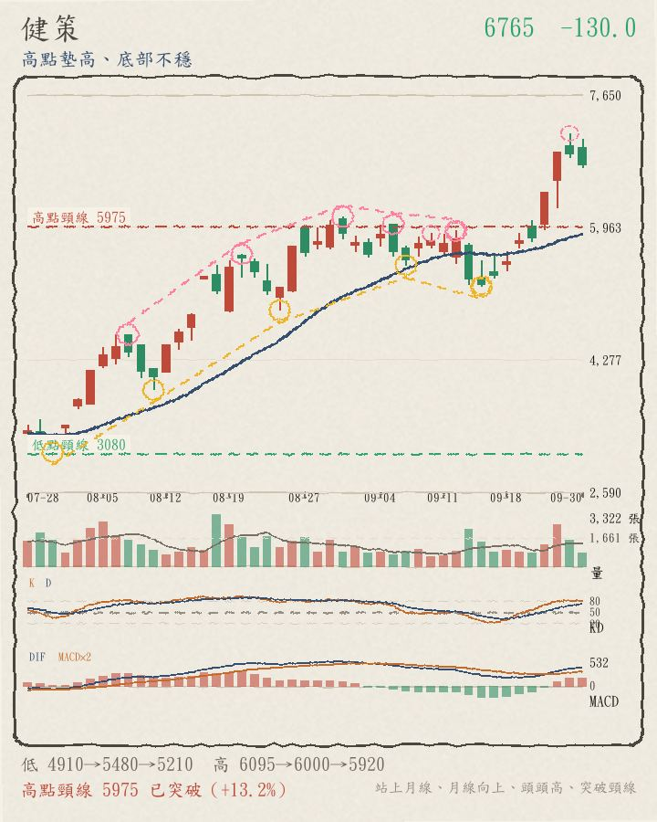
12:30 盤中 6765（-1.89%），比加權指數弱 3.20 個百分點、站上月線 5837.5，已突破高點頸線 5975，高點還在墊高（但底部沒同步墊高）。
- 月線位置：現價 6765 在月線 5837.5 之上（+15.9%）；5 日線 6369 也在月線之上（短均在上）；月線向上
- 量能：以已過交易時間推估，今天成交量約是 20 日均量的 0.97 倍（量平），跟 20 日均量差不多
- 關鍵價位：高點頸線 5975 已站上；前一交易日高點 7160（低於 5.5%）；今天盤中高點 7080（低於 4.4%）；今天盤中低點 6720（高於 0.7%）
- 轉折結構：高點 6095、6000、5920 墊高（頭頭高），但低點 4910、5480、5210 沒有同步墊高；還沒確認的轉折低點 09-16 5210；還沒確認的轉折高點 09-14 5920、09-29 7160（圖上虛線小圈）
鼎元 2426 上市
105 +5.2（+5.21%）
底部墊高、未過前高 盤中成交值 58.97 億・全榜第 32 名（上市第 26 名）・相對大盤 +3.90
好條件 6/8：站上月線、月線向上、底底高、突破頸線、相對大盤強、攻擊量（量增＋上漲）
不好條件 0/8：無
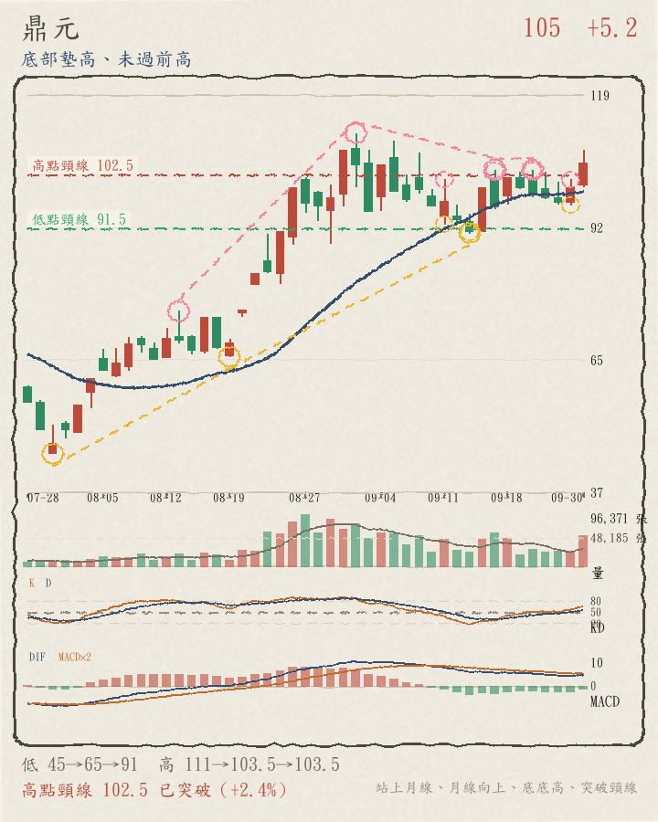
12:30 盤中 105（+5.21%），比加權指數強 3.90 個百分點、站上月線 98.68，已突破高點頸線 102.5，底部還在墊高（但高點沒同步創高）。
- 月線位置：現價 105 在月線 98.68 之上（+6.4%）；5 日線 98.62 也在月線之下（短均在下）；月線向上
- 量能：以已過交易時間推估，今天成交量約是 20 日均量的 1.49 倍（量增），比 20 日均量大不少；上漲又量增，量價配合
- 關鍵價位：高點頸線 102.5 已站上；前一交易日高點 101.5（高於 3.4%）；今天盤中高點 107.5（低於 2.3%）；今天盤中低點 100（高於 5.0%）
- 轉折結構：低點 45.3、65.2、90.6 墊高（底底高），但高點 111、103.5、103.5 沒有同步創高；還沒確認的轉折低點 09-15 90.6、09-29 96.3；還沒確認的轉折高點 09-22 103.5、09-29 101.5（圖上虛線小圈）
大立光 3008 上市
6000 -20.0（-0.33%）
區間或轉弱 盤中成交值 58.38 億・全榜第 33 名（上市第 27 名）・相對大盤 -1.64
好條件 0/8：無
不好條件 5/8：今日下跌、相對大盤弱、在月線之下、貼近今日低點（1% 內）、月線下彎
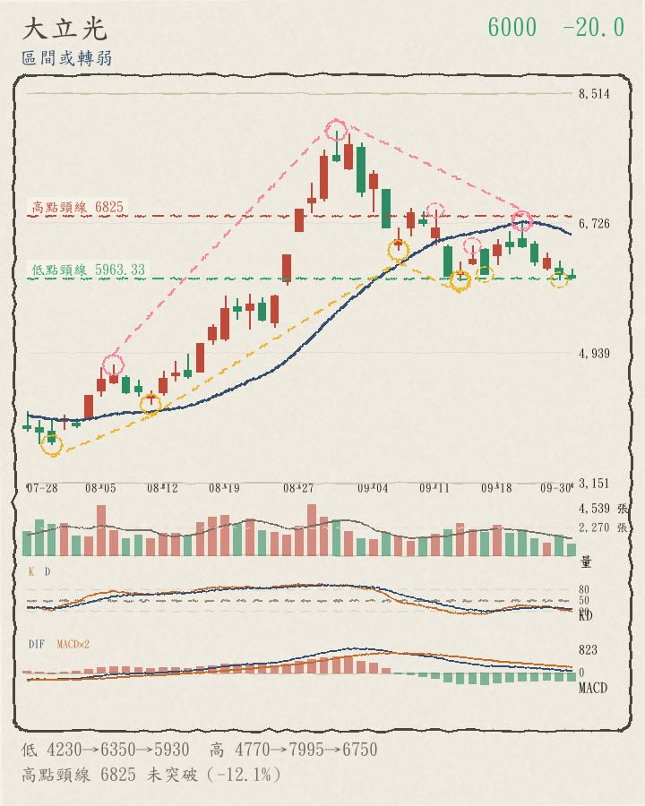
12:30 盤中 6000（-0.33%），比加權指數弱 1.64 個百分點、跌破月線 6649.25，離高點頸線 6825 還差 12.1%，轉折還沒走出明顯方向。
- 月線位置：現價 6000 在月線 6649.25 之下（-9.8%）；5 日線 6252 也在月線之下（短均在下）；月線向下
- 量能：以已過交易時間推估，今天成交量約是 20 日均量的 0.57 倍（量縮），比 20 日均量少很多
- 關鍵價位：高點頸線 6825 還沒突破，差 12.1%；前一交易日高點 6205（低於 3.3%）；今天盤中高點 6090（低於 1.5%）；今天盤中低點 5965（高於 0.6%）
- 轉折結構：低點 4230、6350、5930 與高點 4770、7995、6750 都沒有明顯遞增，屬於區間震盪或轉弱；還沒確認的轉折低點 09-17 6020、09-29 5940；還沒確認的轉折高點 09-16 6415、09-22 6750（圖上虛線小圈）
量縮
↑ 回上方清單
力積電 6770 上市
74 +1.7（+2.35%）
區間或轉弱 盤中成交值 54.88 億・全榜第 34 名（上市第 28 名）・相對大盤 +1.04
好條件 5/8：站上月線、月線向上、突破頸線、相對大盤強、守住今日高檔（距今日高點 1% 內）
不好條件 1/8：貼近今日低點（1% 內）
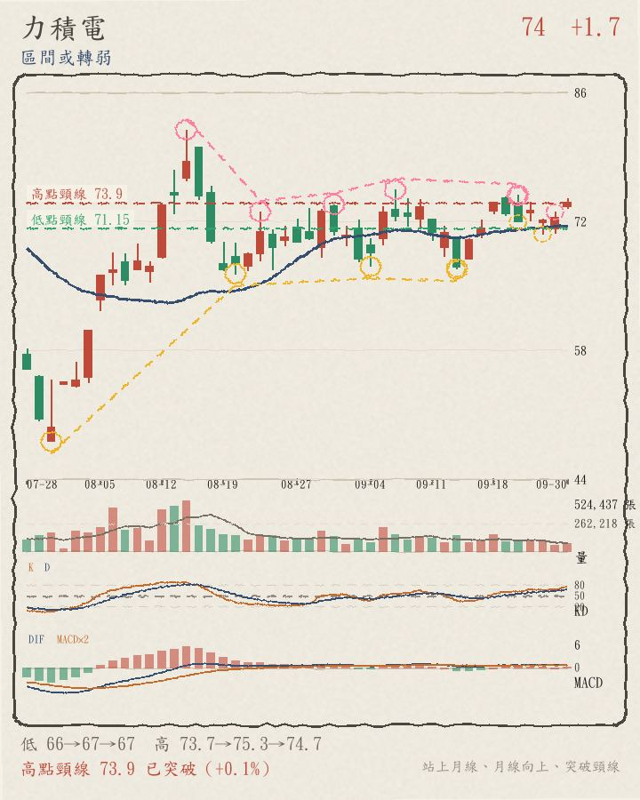
12:30 盤中 74（+2.35%），比加權指數強 1.04 個百分點、站上月線 71.35，已突破高點頸線 73.9，轉折還沒走出明顯方向。
- 月線位置：現價 74 在月線 71.35 之上（+3.7%）；5 日線 72.38 也在月線之上（短均在上）；月線向上
- 量能：以已過交易時間推估，今天成交量約是 20 日均量的 0.74 倍（量平），比 20 日均量少很多；上漲但量縮，量價背離
- 關鍵價位：高點頸線 73.9 已站上；前一交易日高點 72.9（高於 1.5%）；今天盤中高點 74.3（低於 0.4%）；今天盤中低點 73.3（高於 1.0%）
- 轉折結構：低點 66.2、67、66.7 與高點 73.7、75.3、74.7 都沒有明顯遞增，屬於區間震盪或轉弱；還沒確認的轉折低點 09-22 71.8、09-24 70.5；還沒確認的轉折高點 09-22 74.7、09-29 72.9（圖上虛線小圈）
台勝科 3532 上市
482 +28.0（+6.17%）
上升趨勢（底底高＋頭頭高） 盤中成交值 54.5 億・全榜第 35 名（上市第 29 名）・相對大盤 +4.86
好條件 7/8：站上月線、月線向上、底底高、頭頭高、突破頸線、相對大盤強、攻擊量（量增＋上漲）
不好條件 0/8：無
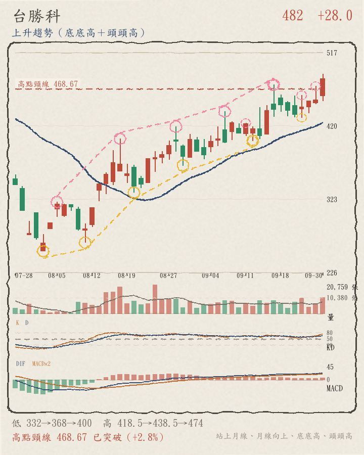
12:30 盤中 482（+6.17%），比加權指數強 4.86 個百分點、站上月線 419.15，已突破高點頸線 468.67，轉折結構仍是底底高＋頭頭高。
- 月線位置：現價 482 在月線 419.15 之上（+15.0%）；5 日線 445.2 也在月線之上（短均在上）；月線向上
- 量能：以已過交易時間推估，今天成交量約是 20 日均量的 2.02 倍（爆量），比 20 日均量大不少；上漲又量增，量價配合
- 關鍵價位：高點頸線 468.67 已站上；前一交易日高點 472（高於 2.1%）；今天盤中高點 488.5（低於 1.3%）；今天盤中低點 453（高於 6.4%）
- 轉折結構：低點 331.5、367.5、400 一路墊高、高點 418.5、438.5、474 也一路墊高，是底底高＋頭頭高；還沒確認的轉折低點 09-14 400、09-23 430.5；還沒確認的轉折高點 09-23 460、09-29 472（圖上虛線小圈）
GIS-KY 6456 上市
92.9 +3.5（+3.91%）
高點墊高、底部不穩 盤中成交值 51.64 億・全榜第 36 名（上市第 30 名）・相對大盤 +2.60
好條件 6/8：站上月線、月線向上、頭頭高、突破頸線、相對大盤強、攻擊量（量增＋上漲）
不好條件 0/8：無
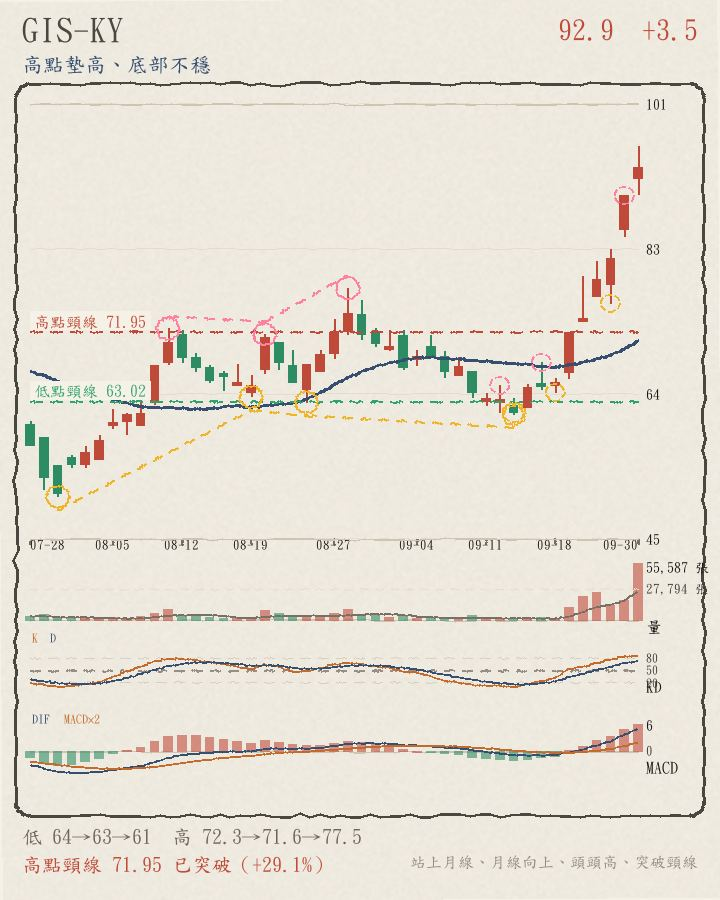
12:30 盤中 92.9（+3.91%），比加權指數強 2.60 個百分點、站上月線 69.695，已突破高點頸線 71.95，高點還在墊高（但底部沒同步墊高）。
- 月線位置：現價 92.9 在月線 69.695 之上（+33.3%）；5 日線 78.96 也在月線之上（短均在上）；月線向上
- 量能：以已過交易時間推估，今天成交量約是 20 日均量的 11.19 倍（爆量），比 20 日均量大不少；上漲又量增，量價配合
- 關鍵價位：高點頸線 71.95 已站上；前一交易日高點 89.4（高於 3.9%）；今天盤中高點 95.7（低於 2.9%）；今天盤中低點 89.5（高於 3.8%）
- 轉折結構：高點 72.3、71.6、77.5 墊高（頭頭高），但低點 63.6、62.9、61.4 沒有同步墊高；還沒確認的轉折低點 09-18 64.2、09-24 75.6；還沒確認的轉折高點 09-17 68、09-29 89.4（圖上虛線小圈）
萬潤 6187 上櫃
1280 -30.0（-2.29%）
高點墊高、底部不穩 盤中成交值 51.29 億・全榜第 37 名（上櫃第 7 名）・相對大盤 -3.60
好條件 3/8：站上月線、頭頭高、突破頸線
不好條件 5/8：今日下跌、相對大盤弱、量增下跌（出貨）、貼近今日低點（1% 內）、月線下彎
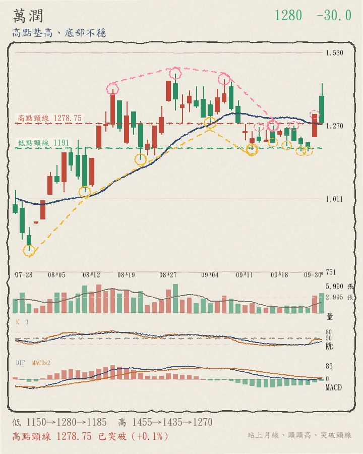
12:30 盤中 1280（-2.29%），比加權指數弱 3.60 個百分點、站上月線 1278，已突破高點頸線 1278.75，高點還在墊高（但底部沒同步墊高）。
- 月線位置：現價 1280 在月線 1278 之上（+0.2%）；5 日線 1232 也在月線之下（短均在下）；月線向下
- 量能：以已過交易時間推估，今天成交量約是 20 日均量的 2.44 倍（爆量），比 20 日均量大不少；下跌卻量增，量價背離
- 關鍵價位：高點頸線 1278.75 已站上；前一交易日高點 1310（低於 2.3%）；今天盤中高點 1420（低於 9.9%）；今天盤中低點 1275（高於 0.4%）
- 轉折結構：高點 1455、1435、1270 墊高（頭頭高），但低點 1150、1280、1185 沒有同步墊高；還沒確認的轉折低點 09-23 1180、09-24 1180；還沒確認的轉折高點 09-22 1270、09-29 1310（圖上虛線小圈）
雙鴻 3324 上櫃
1540 -90.0（-5.52%）
高點墊高、底部不穩 盤中成交值 50.64 億・全榜第 38 名（上櫃第 8 名）・相對大盤 -6.83
好條件 4/8：站上月線、月線向上、頭頭高、突破頸線
不好條件 4/8：今日下跌、相對大盤弱、貼近今日低點（1% 內）、跌破昨日低點
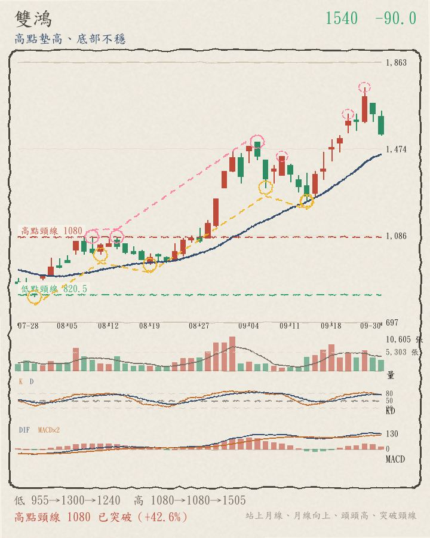
12:30 盤中 1540（-5.52%），比加權指數弱 6.83 個百分點、站上月線 1435.25，已突破高點頸線 1080，高點還在墊高（但底部沒同步墊高）。
- 月線位置：現價 1540 在月線 1435.25 之上（+7.3%）；5 日線 1611 也在月線之上（短均在上）；月線向上
- 量能：以已過交易時間推估，今天成交量約是 20 日均量的 0.94 倍（量平），比 20 日均量少一些
- 關鍵價位：高點頸線 1080 已站上；前一交易日高點 1680（低於 8.3%）；今天盤中高點 1645（低於 6.4%）；今天盤中低點 1535（高於 0.3%）
- 轉折結構：高點 1080、1080、1505 墊高（頭頭高），但低點 955、1300、1240 沒有同步墊高；還沒確認的轉折低點 09-15 1240；還沒確認的轉折高點 09-22 1630、09-24 1750（圖上虛線小圈）
京元電子 2449 上市
296.5 +2.0（+0.68%）
高點墊高、底部不穩 盤中成交值 50.15 億・全榜第 39 名（上市第 31 名）・相對大盤 -0.63
好條件 4/8：站上月線、月線向上、頭頭高、突破頸線
不好條件 2/8：相對大盤弱、貼近今日低點（1% 內）
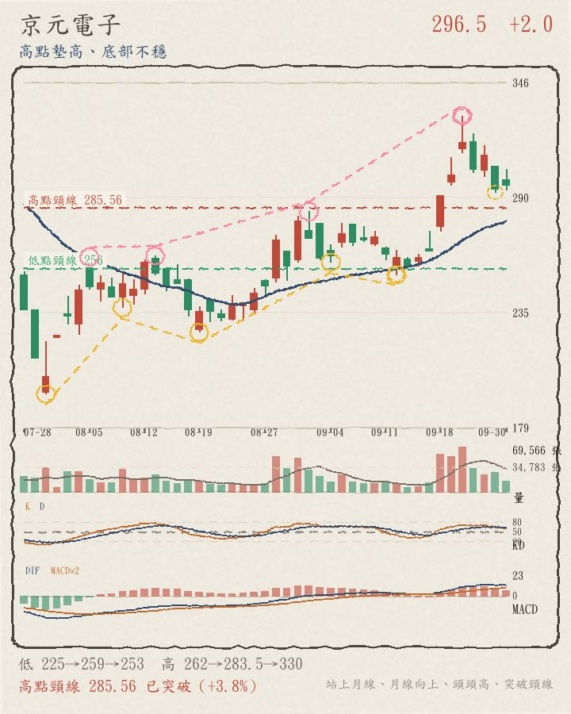
12:30 盤中 296.5（+0.68%），比加權指數弱 0.63 個百分點、站上月線 277，已突破高點頸線 285.56，高點還在墊高（但底部沒同步墊高）。
- 月線位置：現價 296.5 在月線 277 之上（+7.0%）；5 日線 305.6 也在月線之上（短均在上）；月線向上
- 量能：以已過交易時間推估，今天成交量約是 20 日均量的 0.74 倍（量平），比 20 日均量少很多；上漲但量縮，量價背離
- 關鍵價位：高點頸線 285.56 已站上；前一交易日高點 305.5（低於 2.9%）；今天盤中高點 304（低於 2.5%）；今天盤中低點 294（高於 0.9%）
- 轉折結構：高點 262、283.5、330 墊高（頭頭高），但低點 225、259、253 沒有同步墊高；還沒確認的轉折低點 09-14 253、09-29 293；還沒確認的轉折高點 09-22 330（圖上虛線小圈）
群聯 8299 上櫃
2155 +40.0（+1.89%）
高點墊高、底部不穩 盤中成交值 48.08 億・全榜第 40 名（上櫃第 9 名）・相對大盤 +0.58
好條件 4/8：站上月線、月線向上、頭頭高、相對大盤強
不好條件 1/8：貼近今日低點（1% 內）
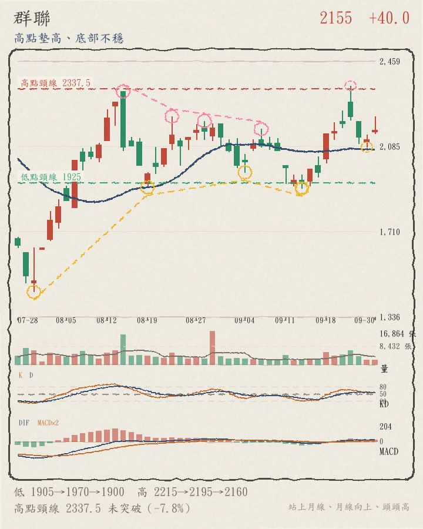
12:30 盤中 2155（+1.89%），比加權指數強 0.58 個百分點、站上月線 2071.5，離高點頸線 2337.5 還差 7.8%，高點還在墊高（但底部沒同步墊高）。
- 月線位置：現價 2155 在月線 2071.5 之上（+4.0%）；5 日線 2158 也在月線之上（短均在上）；月線向上
- 量能：以已過交易時間推估，今天成交量約是 20 日均量的 0.70 倍（量縮），比 20 日均量少很多；上漲但量縮，量價背離
- 關鍵價位：高點頸線 2337.5 還沒突破，差 7.8%；前一交易日高點 2135（高於 0.9%）；今天盤中高點 2215（低於 2.7%）；今天盤中低點 2140（高於 0.7%）
- 轉折結構：高點 2215、2195、2160 墊高（頭頭高），但低點 1905、1970、1900 沒有同步墊高；還沒確認的轉折低點 09-15 1900、09-29 2080；還沒確認的轉折高點 09-23 2350（圖上虛線小圈）
台光電 2383 上市
5005 +85.0（+1.73%）
區間或轉弱 盤中成交值 48.05 億・全榜第 41 名（上市第 32 名）・相對大盤 +0.42
好條件 2/8：相對大盤強、守住今日高檔（距今日高點 1% 內）
不好條件 2/8：在月線之下、月線下彎
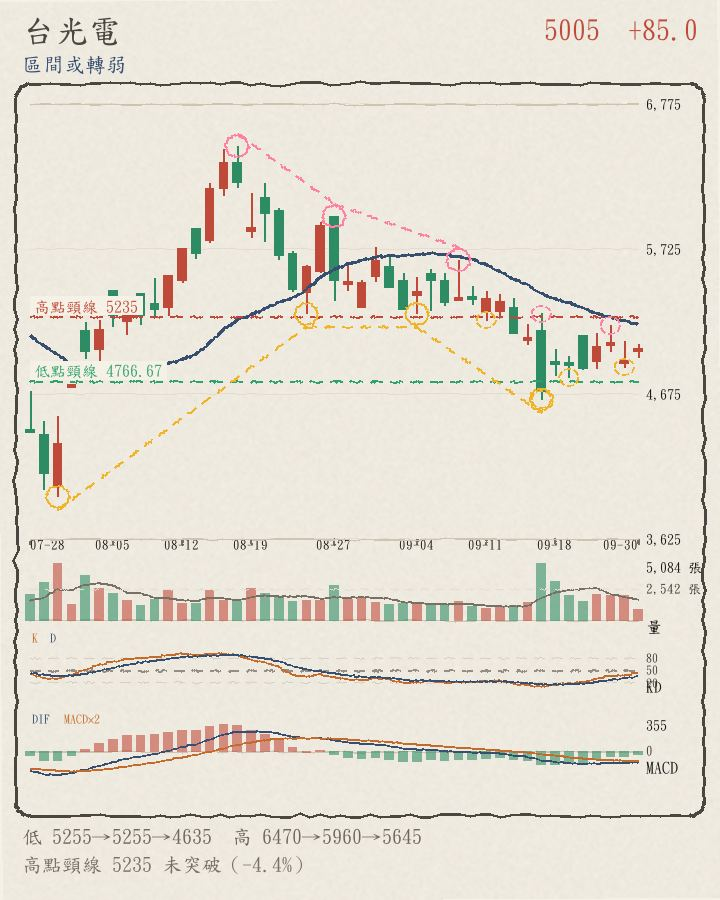
12:30 盤中 5005（+1.73%），比加權指數強 0.42 個百分點、跌破月線 5205，離高點頸線 5235 還差 4.4%，轉折還沒走出明顯方向。
- 月線位置：現價 5005 在月線 5205 之下（-3.8%）；5 日線 4949 也在月線之下（短均在下）；月線向下
- 量能：以已過交易時間推估，今天成交量約是 20 日均量的 0.66 倍（量縮），比 20 日均量少很多；上漲但量縮，量價背離
- 關鍵價位：高點頸線 5235 還沒突破，差 4.4%；前一交易日高點 5055（低於 1.0%）；今天盤中高點 5030（低於 0.5%）；今天盤中低點 4940（高於 1.3%）
- 轉折結構：低點 5255、5255、4635 與高點 6470、5960、5645 都沒有明顯遞增，屬於區間震盪或轉弱；還沒確認的轉折低點 09-21 4795、09-29 4870；還沒確認的轉折高點 09-17 5255、09-24 5170（圖上虛線小圈）
量縮
↑ 回上方清單
矽格 6257 上市
255 +18.5（+7.82%）
區間或轉弱 盤中成交值 47.6 億・全榜第 42 名（上市第 33 名）・相對大盤 +6.51
好條件 5/8：站上月線、月線向上、突破頸線、相對大盤強、攻擊量（量增＋上漲）
不好條件 0/8：無

12:30 盤中 255（+7.82%），比加權指數強 6.51 個百分點、站上月線 222.55，已突破高點頸線 227.25，轉折還沒走出明顯方向。
- 月線位置：現價 255 在月線 222.55 之上（+14.6%）；5 日線 245.2 也在月線之上（短均在上）；月線向上
- 量能：以已過交易時間推估，今天成交量約是 20 日均量的 1.95 倍（爆量），比 20 日均量大不少；上漲又量增，量價配合
- 關鍵價位：高點頸線 227.25 已站上；前一交易日高點 241.5（高於 5.6%）；今天盤中高點 260（低於 1.9%）；今天盤中低點 238.5（高於 6.9%）
- 轉折結構：低點 190、207.5、204 與高點 228、225、263 都沒有明顯遞增，屬於區間震盪或轉弱；還沒確認的轉折低點 09-14 204、09-29 235；還沒確認的轉折高點 09-15 214.5、09-22 263（圖上虛線小圈）
晶技 3042 上市
209 +0.5（+0.24%）
高點墊高、底部不穩 盤中成交值 45.22 億・全榜第 43 名（上市第 34 名）・相對大盤 -1.07
好條件 5/8：站上月線、月線向上、頭頭高、突破頸線、攻擊量（量增＋上漲）
不好條件 1/8：相對大盤弱
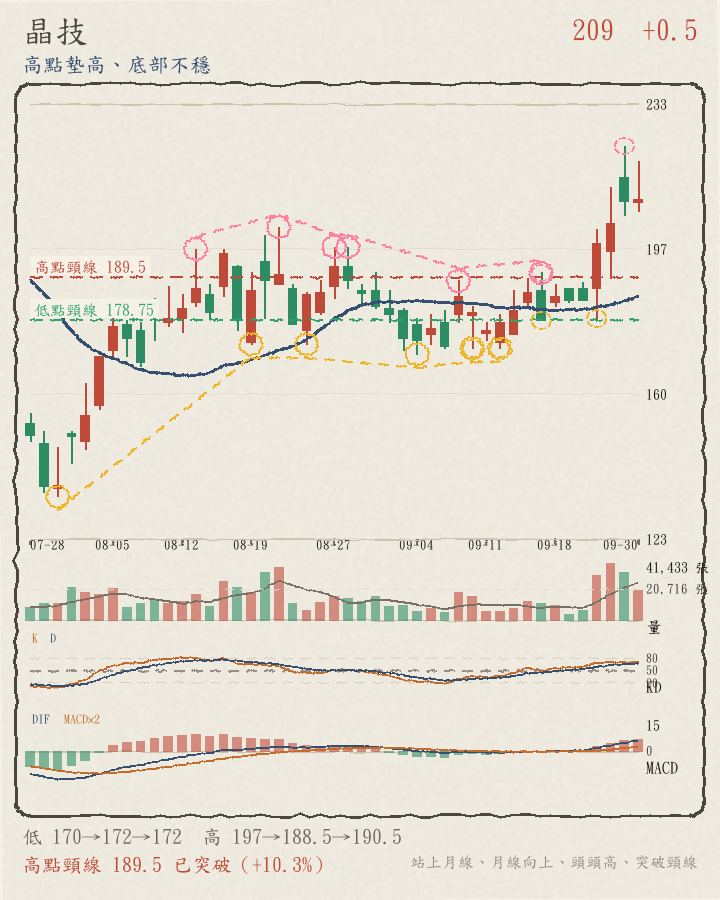
12:30 盤中 209（+0.24%），比加權指數弱 1.07 個百分點、站上月線 183.425，已突破高點頸線 189.5，高點還在墊高（但底部沒同步墊高）。
- 月線位置：現價 209 在月線 183.425 之上（+13.9%）；5 日線 195.3 也在月線之上（短均在上）；月線向上
- 量能：以已過交易時間推估，今天成交量約是 20 日均量的 2.09 倍（爆量），比 20 日均量大不少；上漲又量增，量價配合
- 關鍵價位：高點頸線 189.5 已站上；前一交易日高點 222.5（低於 6.1%）；今天盤中高點 218.5（低於 4.3%）；今天盤中低點 206（高於 1.5%）
- 轉折結構：高點 197、188.5、190.5 墊高（頭頭高），但低點 170、171.5、171.5 沒有同步墊高；還沒確認的轉折低點 09-17 178.5、09-23 179；還沒確認的轉折高點 09-17 190.5、09-29 222.5（圖上虛線小圈）
富世達 6805 上市
2485 -30.0（-1.19%）
高點墊高、底部不穩 盤中成交值 42.54 億・全榜第 44 名（上市第 35 名）・相對大盤 -2.50
好條件 4/8：站上月線、月線向上、頭頭高、突破頸線
不好條件 4/8：今日下跌、相對大盤弱、量增下跌（出貨）、貼近今日低點（1% 內）
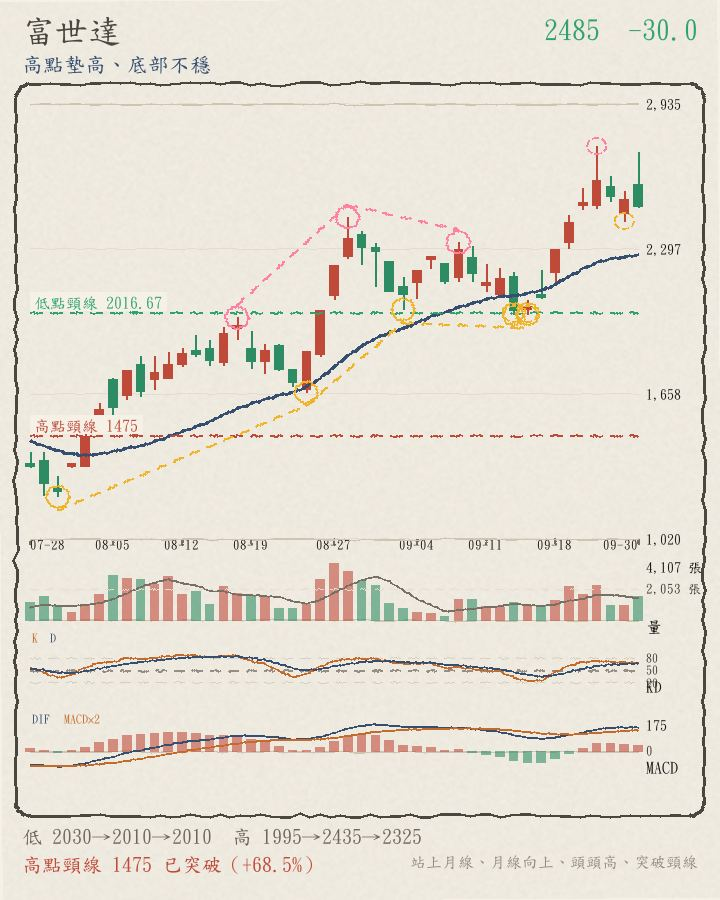
12:30 盤中 2485（-1.19%），比加權指數弱 2.50 個百分點、站上月線 2261.5，已突破高點頸線 1475，高點還在墊高（但底部沒同步墊高）。
- 月線位置：現價 2485 在月線 2261.5 之上（+9.9%）；5 日線 2512 也在月線之上（短均在上）；月線向上
- 量能：以已過交易時間推估，今天成交量約是 20 日均量的 1.49 倍（量增），比 20 日均量大不少；下跌卻量增，量價背離
- 關鍵價位：高點頸線 1475 已站上；前一交易日高點 2550（低於 2.5%）；今天盤中高點 2720（低於 8.6%）；今天盤中低點 2480（高於 0.2%）
- 轉折結構：高點 1995、2435、2325 墊高（頭頭高），但低點 2030、2010、2010 沒有同步墊高；還沒確認的轉折低點 09-16 2010、09-29 2420；還沒確認的轉折高點 09-23 2750（圖上虛線小圈）
華新科 2492 上市
299 -3.0（-0.99%）
底部墊高、未過前高 盤中成交值 38.54 億・全榜第 45 名（上市第 36 名）・相對大盤 -2.30
好條件 2/8：月線向上、底底高
不好條件 4/8：今日下跌、相對大盤弱、在月線之下、貼近今日低點（1% 內）
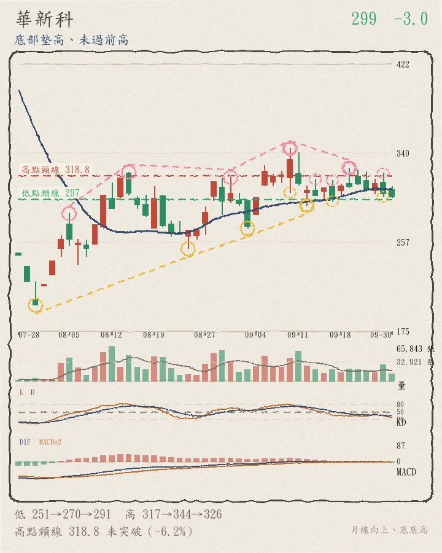
12:30 盤中 299（-0.99%），比加權指數弱 2.30 個百分點、跌破月線 306.275，離高點頸線 318.8 還差 6.2%，底部還在墊高（但高點沒同步創高）。
- 月線位置：現價 299 在月線 306.275 之下（-2.4%）；5 日線 307.8 也在月線之上（短均在上）；月線向上
- 量能：以已過交易時間推估，今天成交量約是 20 日均量的 0.57 倍（量縮），比 20 日均量少很多
- 關鍵價位：高點頸線 318.8 還沒突破，差 6.2%；前一交易日高點 321（低於 6.9%）；今天盤中高點 309（低於 3.2%）；今天盤中低點 298.5（高於 0.2%）
- 轉折結構：低點 251、270、291 墊高（底底高），但高點 317、344、326 沒有同步創高；還沒確認的轉折低點 09-17 295、09-29 299；還沒確認的轉折高點 09-21 326、09-29 321（圖上虛線小圈）
強茂 2481 上市
173.5 -2.0（-1.14%）
高點墊高、底部不穩 盤中成交值 37.91 億・全榜第 46 名（上市第 37 名）・相對大盤 -2.45
好條件 3/8：站上月線、月線向上、頭頭高
不好條件 2/8：今日下跌、相對大盤弱
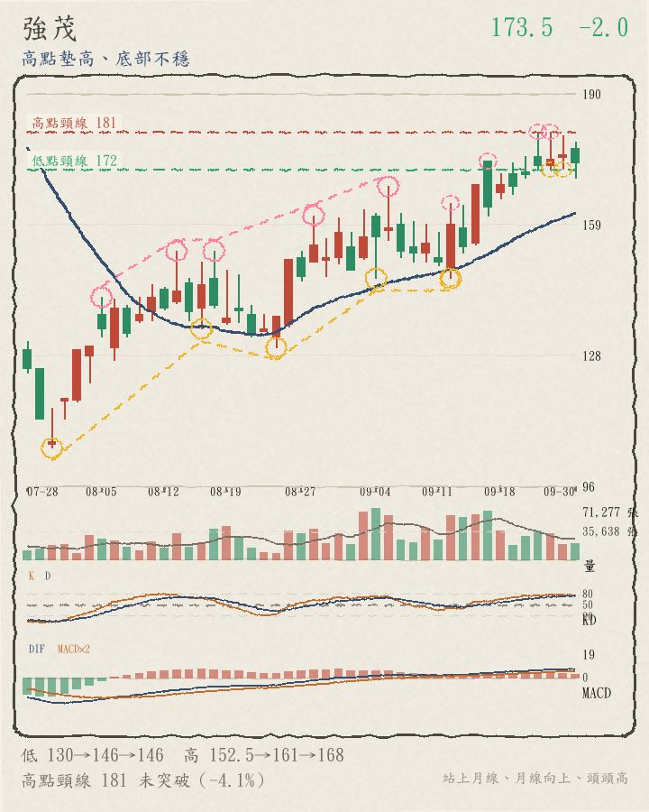
12:30 盤中 173.5（-1.14%），比加權指數弱 2.45 個百分點、站上月線 160.475，離高點頸線 181 還差 4.1%，高點還在墊高（但底部沒同步墊高）。
- 月線位置：現價 173.5 在月線 160.475 之上（+8.1%）；5 日線 172.4 也在月線之上（短均在上）；月線向上
- 量能：以已過交易時間推估，今天成交量約是 20 日均量的 0.66 倍（量縮），比 20 日均量少很多
- 關鍵價位：高點頸線 181 還沒突破，差 4.1%；前一交易日高點 180（低於 3.6%）；今天盤中高點 178.5（低於 2.8%）；今天盤中低點 170（高於 2.1%）
- 轉折結構：高點 152.5、161、168 墊高（頭頭高），但低點 129.5、146、146 沒有同步墊高；還沒確認的轉折低點 09-24 172、09-29 172；還沒確認的轉折高點 09-23 181、09-24 181（圖上虛線小圈）
禾伸堂 3026 上市
795 -1.0（-0.13%）
上升趨勢（底底高＋頭頭高） 盤中成交值 36.55 億・全榜第 47 名（上市第 38 名）・相對大盤 -1.44
好條件 4/8：站上月線、月線向上、底底高、頭頭高
不好條件 3/8：今日下跌、相對大盤弱、貼近今日低點（1% 內）
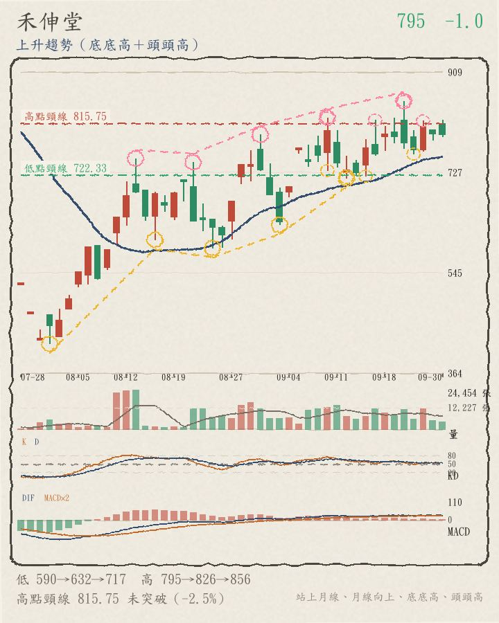
12:30 盤中 795（-0.13%），比加權指數弱 1.44 個百分點、站上月線 752.6，離高點頸線 815.75 還差 2.5%，轉折結構仍是底底高＋頭頭高。
- 月線位置：現價 795 在月線 752.6 之上（+5.6%）；5 日線 789 也在月線之上（短均在上）；月線向上
- 量能：以已過交易時間推估，今天成交量約是 20 日均量的 0.58 倍（量縮），比 20 日均量少很多
- 關鍵價位：高點頸線 815.75 還沒突破，差 2.5%；前一交易日高點 804（低於 1.1%）；今天盤中高點 822（低於 3.3%）；今天盤中低點 791（高於 0.5%）
- 轉折結構：低點 590、632、717 一路墊高、高點 795、826、856 也一路墊高，是底底高＋頭頭高；還沒確認的轉折低點 09-16 720、09-23 760；還沒確認的轉折高點 09-22 856、09-24 820（圖上虛線小圈）
鴻海 2317 上市
253 +2.5（+1.00%）
區間或轉弱 盤中成交值 36.2 億・全榜第 48 名（上市第 39 名）・相對大盤 -0.31
好條件 3/8：站上月線、月線向上、守住今日高檔（距今日高點 1% 內）
不好條件 2/8：相對大盤弱、貼近今日低點（1% 內）
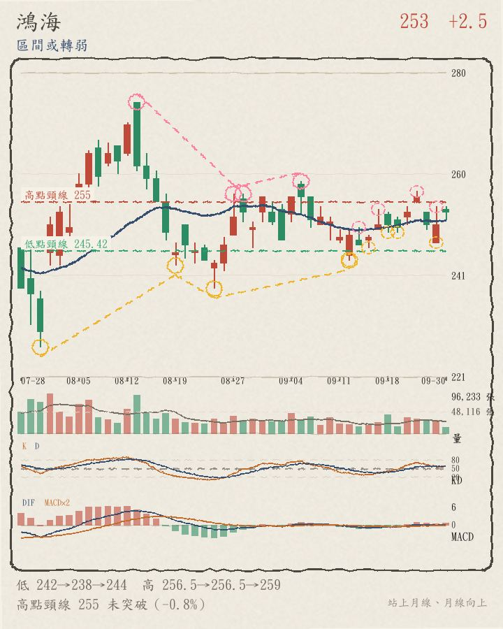
12:30 盤中 253（+1.00%），比加權指數弱 0.31 個百分點、站上月線 251.15，離高點頸線 255 還差 0.8%，轉折還沒走出明顯方向。
- 月線位置：現價 253 在月線 251.15 之上（+0.7%）；5 日線 252 也在月線之上（短均在上）；月線向上
- 量能：以已過交易時間推估，今天成交量約是 20 日均量的 0.61 倍（量縮），比 20 日均量少很多；上漲但量縮，量價背離
- 關鍵價位：高點頸線 255 還沒突破，差 0.8%；前一交易日高點 254（低於 0.4%）；今天盤中高點 254（低於 0.4%）；今天盤中低點 251.5（高於 0.6%）
- 轉折結構：低點 242.5、238、243.5 與高點 256.5、256.5、259 都沒有明顯遞增，屬於區間震盪或轉弱；還沒確認的轉折低點 09-21 249、09-29 247；還沒確認的轉折高點 09-23 257、09-29 254（圖上虛線小圈）
鴻勁 7769 上市
5565 -20.0（-0.36%）
區間或轉弱 盤中成交值 34.84 億・全榜第 49 名（上市第 40 名）・相對大盤 -1.67
好條件 0/8：無
不好條件 6/8：跌破前低、今日下跌、相對大盤弱、在月線之下、跌破昨日低點、月線下彎
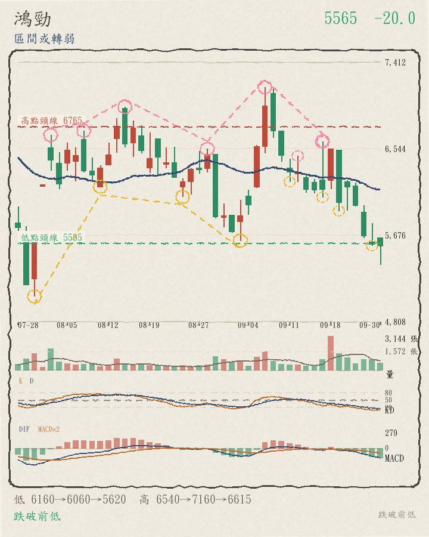
12:30 盤中 5565（-0.36%），比加權指數弱 1.67 個百分點、跌破月線 6147.75，離高點頸線 6765 還差 17.7%，轉折還沒走出明顯方向。
- 月線位置：現價 5565 在月線 6147.75 之下（-9.5%）；5 日線 5877 也在月線之下（短均在下）；月線向下
- 量能：以已過交易時間推估，今天成交量約是 20 日均量的 0.85 倍（量平），比 20 日均量少一些
- 關鍵價位：已跌破前一個轉折低點；高點頸線 6765 還在現價上方 17.7%；前一交易日高點 5795（低於 4.0%）；今天盤中高點 5650（低於 1.5%）；今天盤中低點 5380（高於 3.4%）
- 轉折結構：低點 6160、6060、5620 與高點 6540、7160、6615 都沒有明顯遞增，屬於區間震盪或轉弱；還沒確認的轉折低點 09-21 5920、09-29 5570；還沒確認的轉折高點 09-14 6470、09-17 6615（圖上虛線小圈）
頎邦 6147 上櫃
212.5 +4.0（+1.92%）
區間或轉弱 盤中成交值 34.75 億・全榜第 50 名（上櫃第 10 名）・相對大盤 +0.61
好條件 5/8：站上月線、月線向上、突破頸線、相對大盤強、守住今日高檔（距今日高點 1% 內）
不好條件 0/8：無
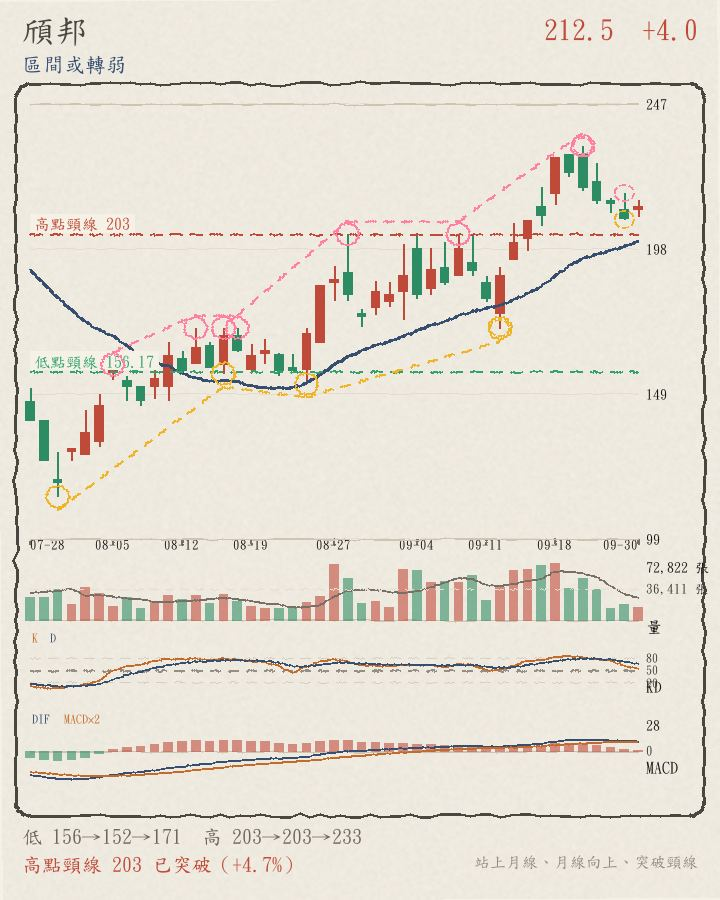
12:30 盤中 212.5（+1.92%），比加權指數強 0.61 個百分點、站上月線 198.725，已突破高點頸線 203，轉折還沒走出明顯方向。
- 月線位置：現價 212.5 在月線 198.725 之上（+6.9%）；5 日線 215.9 也在月線之上（短均在上）；月線向上
- 量能：以已過交易時間推估，今天成交量約是 20 日均量的 0.45 倍（量縮），比 20 日均量少很多；上漲但量縮，量價背離
- 關鍵價位：高點頸線 203 已站上；前一交易日高點 217（低於 2.1%）；今天盤中高點 214.5（低於 0.9%）；今天盤中低點 209（高於 1.7%）
- 轉折結構：低點 155.5、152、171 與高點 203、203、233 都沒有明顯遞增，屬於區間震盪或轉弱；還沒確認的轉折低點 09-14 171、09-29 208；還沒確認的轉折高點 09-22 233、09-29 217（圖上虛線小圈）
創意 3443 上市
7885 -40.0（-0.50%）
上升趨勢（底底高＋頭頭高） 盤中成交值 34.69 億・全榜第 51 名（上市第 41 名）・相對大盤 -1.81
好條件 5/8：站上月線、月線向上、底底高、頭頭高、突破頸線
不好條件 4/8：今日下跌、相對大盤弱、貼近今日低點（1% 內）、跌破昨日低點
12:30 盤中 7885（-0.50%），比加權指數弱 1.81 個百分點、站上月線 6642.25，已突破高點頸線 6446.67，轉折結構仍是底底高＋頭頭高。
- 月線位置：現價 7885 在月線 6642.25 之上（+18.7%）；5 日線 8165 也在月線之上（短均在上）；月線向上
- 量能：以已過交易時間推估，今天成交量約是 20 日均量的 0.32 倍（量縮），比 20 日均量少很多
- 關鍵價位：高點頸線 6446.67 已站上；前一交易日高點 8415（低於 6.3%）；今天盤中高點 8110（低於 2.8%）；今天盤中低點 7860（高於 0.3%）
- 轉折結構：低點 5205、5680、5850 一路墊高、高點 4475、5990、6490 也一路墊高，是底底高＋頭頭高；還沒確認的轉折低點 09-23 8200、09-29 7925；還沒確認的轉折高點 09-14 6575、09-24 8545（圖上虛線小圈）
旺矽 6223 上櫃
5125 -60.0（-1.16%）
區間或轉弱 盤中成交值 34.44 億・全榜第 52 名（上櫃第 11 名）・相對大盤 -2.47
好條件 1/8：月線向上
不好條件 5/8：今日下跌、相對大盤弱、在月線之下、貼近今日低點（1% 內）、跌破昨日低點
12:30 盤中 5125（-1.16%），比加權指數弱 2.47 個百分點、跌破月線 5458.25，離高點頸線 5726.67 還差 10.5%，轉折還沒走出明顯方向。
- 月線位置：現價 5125 在月線 5458.25 之下（-6.1%）；5 日線 5412 也在月線之下（短均在下）；月線向上
- 量能：以已過交易時間推估，今天成交量約是 20 日均量的 0.86 倍（量平），比 20 日均量少一些
- 關鍵價位：高點頸線 5726.67 還沒突破，差 10.5%；前一交易日高點 5400（低於 5.1%）；今天盤中高點 5320（低於 3.7%）；今天盤中低點 5100（高於 0.5%）
- 轉折結構：低點 4730、5365、5090 與高點 5585、6060、5860 都沒有明顯遞增，屬於區間震盪或轉弱；還沒確認的轉折低點 09-22 5090、09-29 5140；還沒確認的轉折高點 09-21 5850、09-24 5625（圖上虛線小圈）
世界 5347 上櫃
182 +3.5（+1.96%）
高點墊高、底部不穩 盤中成交值 33.73 億・全榜第 53 名（上櫃第 12 名）・相對大盤 +0.65
好條件 5/8：站上月線、月線向上、頭頭高、相對大盤強、攻擊量（量增＋上漲）
不好條件 0/8：無
12:30 盤中 182（+1.96%），比加權指數強 0.65 個百分點、站上月線 160.525，離高點頸線 182 還差 0.0%，高點還在墊高（但底部沒同步墊高）。
- 月線位置：現價 182 在月線 160.525 之上（+13.4%）；5 日線 173.4 也在月線之上（短均在上）；月線向上
- 量能：以已過交易時間推估，今天成交量約是 20 日均量的 1.63 倍（爆量），比 20 日均量大不少；上漲又量增，量價配合
- 關鍵價位：高點頸線 182 還沒突破，差 0.0%；前一交易日高點 182.5（低於 0.3%）；今天盤中高點 185（低於 1.6%）；今天盤中低點 179（高於 1.7%）
- 轉折結構：高點 157、158、163 墊高（頭頭高），但低點 146.5、147、152.5 沒有同步墊高；還沒確認的轉折低點 09-21 166.5、09-24 168；還沒確認的轉折高點 09-22 181.5、09-29 182.5（圖上虛線小圈）
力成 6239 上市
290 +9.0（+3.20%）
區間或轉弱 盤中成交值 33.09 億・全榜第 54 名（上市第 42 名）・相對大盤 +1.89
好條件 4/8：站上月線、月線向上、相對大盤強、攻擊量（量增＋上漲）
不好條件 0/8：無
12:30 盤中 290（+3.20%），比加權指數強 1.89 個百分點、站上月線 279.75，離高點頸線 295.3 還差 1.8%，轉折還沒走出明顯方向。
- 月線位置：現價 290 在月線 279.75 之上（+3.7%）；5 日線 287.8 也在月線之上（短均在上）；月線向上
- 量能：以已過交易時間推估，今天成交量約是 20 日均量的 1.14 倍（量增），比 20 日均量大一些；上漲又量增，量價配合
- 關鍵價位：高點頸線 295.3 還沒突破，差 1.8%；前一交易日高點 285.5（高於 1.6%）；今天盤中高點 295.5（低於 1.9%）；今天盤中低點 284.5（高於 1.9%）
- 轉折結構：低點 271、272.5、262 與高點 298、290.5、302 都沒有明顯遞增，屬於區間震盪或轉弱；還沒確認的轉折低點 09-16 268、09-29 279.5；還沒確認的轉折高點 09-15 279.5、09-22 302（圖上虛線小圈）
晶心科 6533 上市
333.5 +30.0（+9.88%）
高點墊高、底部不穩 盤中成交值 31.86 億・全榜第 55 名（上市第 43 名）・相對大盤 +8.57
好條件 6/8：站上月線、月線向上、頭頭高、突破頸線、相對大盤強、攻擊量（量增＋上漲）
不好條件 0/8：無
12:30 盤中 333.5（+9.88%），比加權指數強 8.57 個百分點、站上月線 254.133，已突破高點頸線 276.61，高點還在墊高（但底部沒同步墊高）。
- 月線位置：現價 333.5 在月線 254.133 之上（+31.2%）；5 日線 269.7 也在月線之上（短均在上）；月線向上
- 量能：以已過交易時間推估，今天成交量約是 20 日均量的 5.95 倍（爆量），比 20 日均量大不少；上漲又量增，量價配合
- 關鍵價位：高點頸線 276.61 已站上；前一交易日高點 303.5（高於 9.9%）；今天盤中高點 333.5（高於 0.0%）；今天盤中低點 301（高於 10.8%）
- 轉折結構：高點 261、253、275.339 墊高（頭頭高），但低點 243、244.638、224 沒有同步墊高；還沒確認的轉折低點 09-15 224、09-23 249.5；還沒確認的轉折高點 09-22 278.5、09-29 303.5（圖上虛線小圈）
漢唐 2404 上市
1285 +65.0（+5.33%）
高點墊高、底部不穩 盤中成交值 31.66 億・全榜第 56 名（上市第 44 名）・相對大盤 +4.02
好條件 6/8：站上月線、月線向上、頭頭高、突破頸線、相對大盤強、攻擊量（量增＋上漲）
不好條件 0/8：無
12:30 盤中 1285（+5.33%），比加權指數強 4.02 個百分點、站上月線 1091，已突破高點頸線 1087，高點還在墊高（但底部沒同步墊高）。
- 月線位置：現價 1285 在月線 1091 之上（+17.8%）；5 日線 1205 也在月線之上（短均在上）；月線向上
- 量能：以已過交易時間推估，今天成交量約是 20 日均量的 2.05 倍（爆量），比 20 日均量大不少；上漲又量增，量價配合
- 關鍵價位：高點頸線 1087 已站上；前一交易日高點 1255（高於 2.4%）；今天盤中高點 1300（低於 1.2%）；今天盤中低點 1230（高於 4.5%）
- 轉折結構：高點 1105、1085、1085 墊高（頭頭高），但低點 1050、1010、992 沒有同步墊高；還沒確認的轉折低點 09-17 1025、09-29 1180；還沒確認的轉折高點 09-16 1060、09-24 1285（圖上虛線小圈）
台塑化 6505 上市
97.9 +3.6（+3.82%）
上升趨勢（底底高＋頭頭高） 盤中成交值 31.36 億・全榜第 57 名（上市第 45 名）・相對大盤 +2.51
好條件 8/8：站上月線、月線向上、底底高、頭頭高、突破頸線、相對大盤強、攻擊量（量增＋上漲）、守住今日高檔（距今日高點 1% 內）
不好條件 0/8：無
12:30 盤中 97.9（+3.82%），比加權指數強 2.51 個百分點、站上月線 83.175，已突破高點頸線 89.27，轉折結構仍是底底高＋頭頭高。
- 月線位置：現價 97.9 在月線 83.175 之上（+17.7%）；5 日線 88.9 也在月線之上（短均在上）；月線向上
- 量能：以已過交易時間推估，今天成交量約是 20 日均量的 1.65 倍（爆量），比 20 日均量大不少；上漲又量增，量價配合
- 關鍵價位：高點頸線 89.27 已站上；前一交易日高點 95.5（高於 2.5%）；今天盤中高點 98.6（低於 0.7%）；今天盤中低點 93（高於 5.3%）
- 轉折結構：低點 65.4、68.6、80 一路墊高、高點 76.5、90.6、89.8 也一路墊高，是底底高＋頭頭高；還沒確認的轉折低點 09-15 80；還沒確認的轉折高點 09-21 89.8、09-29 95.5（圖上虛線小圈）
川湖 2059 上市
12120 +5.0（+0.04%）
區間或轉弱 盤中成交值 31.27 億・全榜第 58 名（上市第 46 名）・相對大盤 -1.27
好條件 0/8：無
不好條件 4/8：相對大盤弱、在月線之下、貼近今日低點（1% 內）、月線下彎
12:30 盤中 12120（+0.04%），比加權指數弱 1.27 個百分點、跌破月線 12793.8，離高點頸線 14950 還差 18.9%，轉折還沒走出明顯方向。
- 月線位置：現價 12120 在月線 12793.8 之下（-5.3%）；5 日線 12465 也在月線之下（短均在下）；月線向下
- 量能：以已過交易時間推估，今天成交量約是 20 日均量的 0.75 倍（量平），比 20 日均量少很多；上漲但量縮，量價背離
- 關鍵價位：高點頸線 14950 還沒突破，差 18.9%；前一交易日高點 12550（低於 3.4%）；今天盤中高點 12785（低於 5.2%）；今天盤中低點 12065（高於 0.5%）
- 轉折結構：低點 6840、13310、11665 與高點 14815、14200、13305 都沒有明顯遞增，屬於區間震盪或轉弱；還沒確認的轉折低點 09-15 11665、09-29 11900；還沒確認的轉折高點 09-17 12730、09-22 13305（圖上虛線小圈）
量平
↑ 回上方清單
雷科 6207 上櫃
151 +13.5（+9.82%）
上升趨勢（底底高＋頭頭高） 盤中成交值 30.74 億・全榜第 59 名（上櫃第 13 名）・相對大盤 +8.51
好條件 7/8：站上月線、月線向上、底底高、頭頭高、突破頸線、相對大盤強、攻擊量（量增＋上漲）
不好條件 0/8：無
12:30 盤中 151（+9.82%），比加權指數強 8.51 個百分點、站上月線 113.275，已突破高點頸線 123.5，轉折結構仍是底底高＋頭頭高。
- 月線位置：現價 151 在月線 113.275 之上（+33.3%）；5 日線 121.8 也在月線之上（短均在上）；月線向上
- 量能：以已過交易時間推估，今天成交量約是 20 日均量的 4.14 倍（爆量），比 20 日均量大不少；上漲又量增，量價配合
- 關鍵價位：高點頸線 123.5 已站上；前一交易日高點 137.5（高於 9.8%）；今天盤中高點 151（高於 0.0%）；今天盤中低點 140（高於 7.9%）
- 轉折結構：低點 96.2、103、104 一路墊高、高點 111、114.5、123 也一路墊高，是底底高＋頭頭高；還沒確認的轉折低點 09-15 104、09-23 113.5；還沒確認的轉折高點 09-21 124、09-29 137.5（圖上虛線小圈）
金居 8358 上櫃
496.5 -1.5（-0.30%）
底部墊高、未過前高 盤中成交值 30.22 億・全榜第 60 名（上櫃第 14 名）・相對大盤 -1.61
好條件 2/8：月線向上、底底高
不好條件 4/8：今日下跌、相對大盤弱、在月線之下、貼近今日低點（1% 內）
12:30 盤中 496.5（-0.30%），比加權指數弱 1.61 個百分點、跌破月線 504.15，離高點頸線 528 還差 6.0%，底部還在墊高（但高點沒同步創高）。
- 月線位置：現價 496.5 在月線 504.15 之下（-1.5%）；5 日線 497.8 也在月線之下（短均在下）；月線向上
- 量能：以已過交易時間推估，今天成交量約是 20 日均量的 0.54 倍（量縮），比 20 日均量少很多
- 關鍵價位：高點頸線 528 還沒突破，差 6.0%；前一交易日高點 519（低於 4.3%）；今天盤中高點 515（低於 3.6%）；今天盤中低點 495（高於 0.3%）
- 轉折結構：低點 399、469.5、477 墊高（底底高），但高點 462、564、535 沒有同步創高；還沒確認的轉折低點 09-17 477.5、09-23 490；還沒確認的轉折高點 09-14 530、09-29 519（圖上虛線小圈）
嘉澤 3533 上市
1780 +70.0（+4.09%）
區間或轉弱 盤中成交值 29.82 億・全榜第 61 名（上市第 47 名）・相對大盤 +2.78
好條件 6/8：站上月線、月線向上、突破頸線、相對大盤強、攻擊量（量增＋上漲）、守住今日高檔（距今日高點 1% 內）
不好條件 0/8：無
12:30 盤中 1780（+4.09%），比加權指數強 2.78 個百分點、站上月線 1638.75，已突破高點頸線 1765，轉折還沒走出明顯方向。
- 月線位置：現價 1780 在月線 1638.75 之上（+8.6%）；5 日線 1685 也在月線之上（短均在上）；月線向上
- 量能：以已過交易時間推估，今天成交量約是 20 日均量的 2.14 倍（爆量），比 20 日均量大不少；上漲又量增，量價配合
- 關鍵價位：高點頸線 1765 已站上；前一交易日高點 1765（高於 0.8%）；今天盤中高點 1785（低於 0.3%）；今天盤中低點 1705（高於 4.4%）
- 轉折結構：低點 1565、1540、1495 與高點 2160、2050、1770 都沒有明顯遞增，屬於區間震盪或轉弱；還沒確認的轉折低點 09-23 1660、09-24 1660；還沒確認的轉折高點 09-23 1760、09-29 1765（圖上虛線小圈）
東捷 8064 上櫃
149 +7.5（+5.30%）
高點墊高、底部不穩 盤中成交值 29.45 億・全榜第 62 名（上櫃第 15 名）・相對大盤 +3.99
好條件 6/8：站上月線、月線向上、頭頭高、突破頸線、相對大盤強、攻擊量（量增＋上漲）
不好條件 0/8：無
12:30 盤中 149（+5.30%），比加權指數強 3.99 個百分點、站上月線 122.375，已突破高點頸線 141.83，高點還在墊高（但底部沒同步墊高）。
- 月線位置：現價 149 在月線 122.375 之上（+21.8%）；5 日線 137.1 也在月線之上（短均在上）；月線向上
- 量能：以已過交易時間推估，今天成交量約是 20 日均量的 2.43 倍（爆量），比 20 日均量大不少；上漲又量增，量價配合
- 關鍵價位：高點頸線 141.83 已站上；前一交易日高點 148.5（高於 0.3%）；今天盤中高點 155（低於 3.9%）；今天盤中低點 144（高於 3.5%）
- 轉折結構：高點 110.5、141.5、142 墊高（頭頭高），但低點 96.6、92、108 沒有同步墊高；還沒確認的轉折低點 09-22 133、09-24 130.5；還沒確認的轉折高點 09-22 142、09-29 148.5（圖上虛線小圈）
騰輝電子-KY 6672 上市
369 +33.5（+9.99%）
上升趨勢（底底高＋頭頭高） 盤中成交值 29.37 億・全榜第 63 名（上市第 48 名）・相對大盤 +8.68
好條件 7/8：站上月線、月線向上、底底高、頭頭高、突破頸線、相對大盤強、攻擊量（量增＋上漲）
不好條件 0/8：無
12:30 盤中 369（+9.99%），比加權指數強 8.68 個百分點、站上月線 296.925，已突破高點頸線 316.17，轉折結構仍是底底高＋頭頭高。
- 月線位置：現價 369 在月線 296.925 之上（+24.3%）；5 日線 318.4 也在月線之上（短均在上）；月線向上
- 量能：以已過交易時間推估，今天成交量約是 20 日均量的 1.84 倍（爆量），比 20 日均量大不少；上漲又量增，量價配合
- 關鍵價位：高點頸線 316.17 已站上；前一交易日高點 335.5（高於 10.0%）；今天盤中高點 369（高於 0.0%）；今天盤中低點 335.5（高於 10.0%）
- 轉折結構：低點 255、261.5、285 一路墊高、高點 295、294.5、317.5 也一路墊高，是底底高＋頭頭高；還沒確認的轉折低點 09-17 285.5、09-23 298；還沒確認的轉折高點 09-21 316、09-24 337.5（圖上虛線小圈）
欣銓 3264 上櫃
244.5 +3.0（+1.24%）
高點墊高、底部不穩 盤中成交值 29.13 億・全榜第 64 名（上櫃第 16 名）・相對大盤 -0.07
好條件 5/8：站上月線、月線向上、頭頭高、突破頸線、攻擊量（量增＋上漲）
不好條件 1/8：相對大盤弱
12:30 盤中 244.5（+1.24%），比加權指數弱 0.07 個百分點、站上月線 239.6，已突破高點頸線 240.33，高點還在墊高（但底部沒同步墊高）。
- 月線位置：現價 244.5 在月線 239.6 之上（+2.0%）；5 日線 260 也在月線之上（短均在上）；月線向上
- 量能：以已過交易時間推估，今天成交量約是 20 日均量的 1.25 倍（量增），比 20 日均量大不少；上漲又量增，量價配合
- 關鍵價位：高點頸線 240.33 已站上；前一交易日高點 245（低於 0.2%）；今天盤中高點 247（低於 1.0%）；今天盤中低點 238（高於 2.7%）
- 轉折結構：高點 239.5、251.5、289.5 墊高（頭頭高），但低點 202、222.5、220 沒有同步墊高；還沒確認的轉折低點 09-16 220、09-29 238；還沒確認的轉折高點 09-10 251.5、09-22 289.5（圖上虛線小圈）
台塑 1301 上市
68.1 +3.5（+5.42%）
高點墊高、底部不穩 盤中成交值 29.01 億・全榜第 65 名（上市第 49 名）・相對大盤 +4.11
好條件 6/8：站上月線、月線向上、頭頭高、相對大盤強、攻擊量（量增＋上漲）、守住今日高檔（距今日高點 1% 內）
不好條件 0/8：無
12:30 盤中 68.1（+5.42%），比加權指數強 4.11 個百分點、站上月線 64.98，離高點頸線 69.57 還差 2.1%，高點還在墊高（但底部沒同步墊高）。
- 月線位置：現價 68.1 在月線 64.98 之上（+4.8%）；5 日線 64.32 也在月線之下（短均在下）；月線向上
- 量能：以已過交易時間推估，今天成交量約是 20 日均量的 1.83 倍（爆量），比 20 日均量大不少；上漲又量增，量價配合
- 關鍵價位：高點頸線 69.57 還沒突破，差 2.1%；前一交易日高點 67.7（高於 0.6%）；今天盤中高點 68.4（低於 0.4%）；今天盤中低點 65.4（高於 4.1%）
- 轉折結構：高點 57.2、61.8、71.2 墊高（頭頭高），但低點 55.9、64.1、61.2 沒有同步墊高；還沒確認的轉折低點 09-15 61.2、09-24 62；還沒確認的轉折高點 09-22 66.5、09-29 67.7（圖上虛線小圈）
世芯-KY 3661 上市
3755 +70.0（+1.90%）
區間或轉弱 盤中成交值 28.58 億・全榜第 66 名（上市第 50 名）・相對大盤 +0.59
好條件 1/8：相對大盤強
不好條件 3/8：在月線之下、貼近今日低點（1% 內）、月線下彎
12:30 盤中 3755（+1.90%），比加權指數強 0.59 個百分點、跌破月線 3811，離高點頸線 3757.5 還差 0.1%，轉折還沒走出明顯方向。
- 月線位置：現價 3755 在月線 3811 之下（-1.5%）；5 日線 3719 也在月線之下（短均在下）；月線向下
- 量能：以已過交易時間推估，今天成交量約是 20 日均量的 0.42 倍（量縮），比 20 日均量少很多；上漲但量縮，量價背離
- 關鍵價位：高點頸線 3757.5 還沒突破，差 0.1%；前一交易日高點 3795（低於 1.1%）；今天盤中高點 3810（低於 1.4%）；今天盤中低點 3730（高於 0.7%）
- 轉折結構：低點 2630、3585、3260 與高點 4530、4350、3950 都沒有明顯遞增，屬於區間震盪或轉弱；還沒確認的轉折低點 09-17 3260、09-29 3675；還沒確認的轉折高點 09-22 3950、09-29 3795（圖上虛線小圈）
量縮
↑ 回上方清單
順達 3211 上櫃
401.5 +15.5（+4.02%）
底部墊高、未過前高 盤中成交值 27 億・全榜第 67 名（上櫃第 17 名）・相對大盤 +2.71
好條件 5/8：站上月線、月線向上、底底高、相對大盤強、攻擊量（量增＋上漲）
不好條件 0/8：無
12:30 盤中 401.5（+4.02%），比加權指數強 2.71 個百分點、站上月線 377.35，離高點頸線 401.67 還差 0.0%，底部還在墊高（但高點沒同步創高）。
- 月線位置：現價 401.5 在月線 377.35 之上（+6.4%）；5 日線 383.4 也在月線之上（短均在上）；月線向上
- 量能：以已過交易時間推估，今天成交量約是 20 日均量的 2.11 倍（爆量），比 20 日均量大不少；上漲又量增，量價配合
- 關鍵價位：高點頸線 401.67 還沒突破，差 0.0%；前一交易日高點 392.5（高於 2.3%）；今天盤中高點 406（低於 1.1%）；今天盤中低點 388（高於 3.5%）
- 轉折結構：低點 278.5、315.5、349 墊高（底底高），但高點 419、414.5、398 沒有同步創高；還沒確認的轉折低點 09-17 360.5、09-24 374.5；還沒確認的轉折高點 09-22 398、09-29 392.5（圖上虛線小圈）
聯亞 3081 上櫃
2710 +60.0（+2.26%）
底部墊高、未過前高 盤中成交值 26.69 億・全榜第 68 名（上櫃第 18 名）・相對大盤 +0.95
好條件 3/8：底底高、相對大盤強、守住今日高檔（距今日高點 1% 內）
不好條件 2/8：在月線之下、月線下彎
12:30 盤中 2710（+2.26%），比加權指數強 0.95 個百分點、跌破月線 2931，離高點頸線 2910 還差 6.9%，底部還在墊高（但高點沒同步創高）。
- 月線位置：現價 2710 在月線 2931 之下（-7.5%）；5 日線 2746 也在月線之下（短均在下）；月線向下
- 量能：以已過交易時間推估，今天成交量約是 20 日均量的 0.37 倍（量縮），比 20 日均量少很多；上漲但量縮，量價背離
- 關鍵價位：高點頸線 2910 還沒突破，差 6.9%；前一交易日高點 2735（低於 0.9%）；今天盤中高點 2730（低於 0.7%）；今天盤中低點 2665（高於 1.7%）
- 轉折結構：低點 1335、1450、2650 墊高（底底高），但高點 3600、2930、2950 沒有同步創高；還沒確認的轉折低點 09-15 2650、09-23 2585；還沒確認的轉折高點 09-22 2950、09-29 2735（圖上虛線小圈）
精測 6510 上櫃
3090 -50.0（-1.59%）
底部墊高、未過前高 盤中成交值 23.95 億・全榜第 69 名（上櫃第 19 名）・相對大盤 -2.90
好條件 2/8：月線向上、底底高
不好條件 5/8：跌破前低、今日下跌、相對大盤弱、在月線之下、貼近今日低點（1% 內）
12:30 盤中 3090（-1.59%），比加權指數弱 2.90 個百分點、跌破月線 3382.25，底部還在墊高（但高點沒同步創高）。
- 月線位置：現價 3090 在月線 3382.25 之下（-8.6%）；5 日線 3422 也在月線之上（短均在上）；月線向上
- 量能：以已過交易時間推估，今天成交量約是 20 日均量的 0.89 倍（量平），比 20 日均量少一些
- 關鍵價位：前一交易日高點 3285（低於 5.9%）；今天盤中高點 3240（低於 4.6%）；今天盤中低點 3075（高於 0.5%）
- 轉折結構：低點 2235、2570、3165 墊高（底底高），但高點 3100、3935、3775 沒有同步創高；還沒確認的轉折低點 09-17 3165、09-29 3055；還沒確認的轉折高點 09-22 3775（圖上虛線小圈）
信昌電 6173 上櫃
289.5 -8.0（-2.69%）
上升趨勢（底底高＋頭頭高） 盤中成交值 23.36 億・全榜第 70 名（上櫃第 20 名）・相對大盤 -4.00
好條件 4/8：站上月線、月線向上、底底高、頭頭高
不好條件 4/8：今日下跌、相對大盤弱、貼近今日低點（1% 內）、跌破昨日低點
12:30 盤中 289.5（-2.69%），比加權指數弱 4.00 個百分點、站上月線 286.05，離高點頸線 321 還差 9.8%，轉折結構仍是底底高＋頭頭高。
- 月線位置：現價 289.5 在月線 286.05 之上（+1.2%）；5 日線 303.5 也在月線之上（短均在上）；月線向上
- 量能：以已過交易時間推估，今天成交量約是 20 日均量的 0.51 倍（量縮），比 20 日均量少很多
- 關鍵價位：高點頸線 321 還沒突破，差 9.8%；前一交易日高點 314（低於 7.8%）；今天盤中高點 303.5（低於 4.6%）；今天盤中低點 289（高於 0.2%）
- 轉折結構：低點 189.5、190.5、265.5 一路墊高、高點 230、270.5、331 也一路墊高，是底底高＋頭頭高；還沒確認的轉折低點 09-22 300、09-29 296.5；還沒確認的轉折高點 09-24 314、09-29 314（圖上虛線小圈）